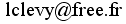
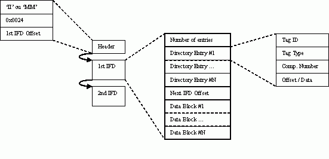

This work is licensed under a Creative Commons Attribution-NonCommercial-ShareAlike 4.0 International License.
This work is licensed under a Creative Commons Attribution-NonCommercial-ShareAlike 4.0 International License.
Version 0.8 (Jannuary 9th, 2019)
 with "CR2 format" as subject.
This document is a work in progress, if you want to help, send me a email!
By choosing to stores pictures in a RAW format, a lot of post-processing is possible by the photograph, like the White Balance. With Jpeg, it is far more difficult, and with a big quality loss.
The CR2 format is used by Canon since the 350D, 20D, G9 and 1D MarkII models. The first version of this RAW format was .CRW (see also here) and is used by Canon D30, D60, 10D, 300D, PowerShot Pro1, G1-G6, S30-S70. The EOS 1Ds is writing TIFF files.
I personnally own a 450D camera and I want to know how my pictures are stored on my hard disk. I would like also to understand how pictures are produced by my camera, and how a Jpeg can be created starting from a CR2 file. Some answers to these questions are in embedded in the code source of dcraw, a great tool Dave Coffin has written to create a jpeg file from the RAW from almost all Camera models, including Canon ones. But the code source of Dcraw is not well commented, its coding style is sometimes difficult to follow, and some processing is not explained: Dcraw can not be used directly as a documentation.
Thus this document is written as a background to explain the main tasks Dcraw is doing on CR2 files to create ("render") a Jpeg file, while also giving official or theorical references for a deeper understanding.
This document is following the same progression to explain as most as possible the CR2 format and how to use it, but this format, like many other proprietary format, is not understood at 100%, despite the work of people like Phil Harvey, who is working on discovering and documenting the meaning of each section of the CR2 format.
Of course other processing can also be applied :
The first step is to find the location of useful information in the CR2 file.
The .CR2 file is based on the TIFF file format. This TIFF file has 4 Image File Directories (IFDs).
| Offset | Content | Comment |
|---|---|---|
| 0x0000 | Header | contains the byte ordering, the version and the offset to the RAW picture |
| computed | IFD#0 | this part contains the Exif section, which contains the Makernotes section. Information about picture#0. |
| computed | picture#0 | small version of the picture (one fourth the size of the original), compressed in Jpeg |
| computed | IFD#1 | Information about picture#1. |
| computed | picture#1 | small version of the picture, compressed in Jpeg |
| computed | IFD#2 | Information about picture#2. |
| computed | picture#2 | small version of the picture, not compressed |
| in header | IFD#3 | Information about picture#3, the full dimension RAW image |
| computed | picture#3 | RAW image data, lossless compressed in Jpeg (not RGB data!) |
A lot of meta-information is available in a RAW file such as a CR2 file. All of this is recorded using TIFF tags.
The EXIF part contains normalized information about the Camera characteristics, settings and measures when the picture has been taken :
the ISO, Aperture and Speed values for example.
The Makernotes part is also containing interesting information but is a proprietary extension kept secret by manufacturers.
Dcraw is keeping the following information while parsing the CR2 file:
The following sections are for technical people who want to understand the structure of a TIFF/CR2 file. Others may want to continue directly to Section 3.
Parts of the following sections are a tranlated from: Format d'images RAW by C. Rousseau. (French), with his authorization, of course.
| Offset | Length | Type | Description | Value |
|---|---|---|---|---|
| 0x0000 | 2 | char | Byte order | "II" or 0x4949 means Intel byte order (little endian) "MM" or 0x4d4d means Motorola byte order (big endian) |
| 0x0002 | 1 | short | TIFF magic word | 0x002a |
| 0x0004 | 1 | long | TIFF offset | 0x0000 0010 |
| 0x0008 | 1 | short | CR2 magic word | "CR" or 0x4352 |
| 0x000a | 1 | char | CR2 major version | 2 |
| 0x000b | 1 | char | CR2 minor version | 0 |
| 0x000c | 1 | long | RAW IFD offset |
An given IFD contains all necessary information to read the associated picture.
| Offset | Size in bytes | Description |
|---|---|---|
| 0x00/0 | 2 | number of entries (N) |
| 0x02/2 | 12 | entry#0 |
| 0x0e/14 | 12 | entry#1 |
| ... | ... | ... |
| 2+12*(N-1) | 12 | entry #N-1 |
| 2+12*N | 4 | next IFD offset |
A TIFF tag, is a logical entity which consist in: an record (Directory Entry) inside an IFD, and some data. These two parts are generally separated.
All directory entries are a sequence inside the same IFD, the data can be anywhere in the file.
| Offset | Size in bytes | Description |
|---|---|---|
| 0 | 2 | tag ID |
| 2 | 2 | tag type: 1 = unsigned char 2 = string (with an ending zero) 3 = unsigned short (2 bytes) 4 = unsigned long (4 bytes) 5 = unsigned rationnal (2 unsigned long) 6 = signed char 7 = byte sequence 8 = signed short 9 = signed long 10 = signed rationnal (2 signed long) 11 = float, 4 bytes, IEEE format 12 = float, 8 bytes, IEEE format |
| 4 | 4 | number of value |
| 8 | 4 | value, or pointer to the data |
As a summary, here is the structure of a TIFF file with 2 IFDs:

Remember that there is exactly on picture encoded per IFD, with different compression methods and sizes.
The picture in IFD #0, for the 450D, has 2256x1504 pixels. For the 40D, the dimension is 1936x1288.
the TIFF tags are:
| Tag value | Name | Type | Length | Description |
|---|---|---|---|---|
| 0x0100 / 256 | imageWidth | 3=unsigned_short | 1 | 1936 for the 40D 2256 for the 450D |
| 0x0101 / 257 | imageLength | 3=unsigned_short | 1 | 1288 for the 40D 1504 for the 450D |
| 0x0102 / 258 | bitsPerSample | 3=unsigned_short | 3 | [8,8,8] |
| 0x0103 / 259 | compression | 3=unsigned_short | 1 | 6=old_jpeg |
| 0x010f / 271 | make | 2=string | 1 | "Canon" |
| 0x0110 / 272 | model | 2=string | 1 | Examples: "Canon EOS 40D" or "Canon EOS 450D" |
| 0x0111 / 273 | stripOffset | 4=pointer | 1 | pointer to the image data in this IFD |
| 0x0112 / 274 | orientation | 3=unsigned_short | 1 | 1="0,0 is top-left" |
| 0x0117 / 279 | stripByteCounts | 4=long | 1 | size in bytes of the image data in this IFD |
| 0x011a / 282 | xResolution | 5=rational | 1 | 72 |
| 0x011b / 283 | yResolution | 5=rational | 1 | 72 |
| 0x0128 / 296 | resolutionUnit | 3=unsigned_short | 1 | 2="pixels per inche" |
| 0x0132 / 306 | dateTime | 2=string | 20 | "2008:02:16 17:02:52" |
| 0x8769 / 34665 | EXIF | 4=pointer | contains the EXIF sub directory | |
| 0x8825 / 34853 | GPS data | 4=pointer | points to the GPS data |
| Tag value | Name | Type | Length | Description |
|---|---|---|---|---|
| 0x829a / 33434 | exposureTime | 5=rational | 1 | exposure time. 660=0.1666 sec |
| 0x829d / 33437 | fNumber | 5=rational | 1 | fNumber. 668=4 (f/4.0) |
| 0x927c / 37500 | Makernote | pointer | contains the Makenote sub directory |
See Exiftool page for all Canon tags details.
| Tag value | Name | Type | Length | Description | ||||||||||||||||||||||||||||||||||||||||||||||||||||||||||||
|---|---|---|---|---|---|---|---|---|---|---|---|---|---|---|---|---|---|---|---|---|---|---|---|---|---|---|---|---|---|---|---|---|---|---|---|---|---|---|---|---|---|---|---|---|---|---|---|---|---|---|---|---|---|---|---|---|---|---|---|---|---|---|---|---|
| 0x0001 / 1 | CameraSettings | 3=unsigned_short | 47 | camera settings | ||||||||||||||||||||||||||||||||||||||||||||||||||||||||||||
| 0x0002 / 2 | focusInfo | 3=unsigned_short | 4 | focus info | ||||||||||||||||||||||||||||||||||||||||||||||||||||||||||||
| 0x0006 / 6 | imageType | 2=string | 15 | Examples: "Canon EOS 450D" |
||||||||||||||||||||||||||||||||||||||||||||||||||||||||||||
| 0x0097 | DustDeleteData | 7=byte sequence | 1024 | See United States Patent 7657116 | ||||||||||||||||||||||||||||||||||||||||||||||||||||||||||||
| 0x00e0 / 224 | sensorInfo | 3=unsigned_short | 17 |
|
||||||||||||||||||||||||||||||||||||||||||||||||||||||||||||
| 0x4001 / 16385 | colorBalance | 3=unsigned_short | variable 1227 for 450D |
exists for all EOS models, and for the G10 in this section:
|
||||||||||||||||||||||||||||||||||||||||||||||||||||||||||||
| 0x4002 | ? | 3=unsigned_short | variable | only in .cr2, not in .jpg. details | ||||||||||||||||||||||||||||||||||||||||||||||||||||||||||||
| 0x4003 | ? | 3=unsigned_short | 22 | tag exists in 1D Mark II, 20D, 1Ds Mark II and 350D only. no tag since the 5D | ||||||||||||||||||||||||||||||||||||||||||||||||||||||||||||
| 0x4004 | ? | 3=unsigned_short | 304 | tag exists in 1D Mark II and 1Ds Mark II only. | ||||||||||||||||||||||||||||||||||||||||||||||||||||||||||||
| 0x4005 | ? | 7=bytes sequence | variable | tag exists since the 5D and for the 5D Mark II. Only in .cr2, not in .jpg. structure | ||||||||||||||||||||||||||||||||||||||||||||||||||||||||||||
| 0x4008 | BlackLevel? | 3=unsigned_short | 3 | since the 5D. always [129, 129, 129] | ||||||||||||||||||||||||||||||||||||||||||||||||||||||||||||
| 0x4009 | ? | 3=unsigned_short | 3 | since the 5D, often [0, 0, 0]. excepts: 1D Mark III and 1Ds Mark III : [65535,65535,65535], 5D and 1D Mark II N : [129,129,129] |
||||||||||||||||||||||||||||||||||||||||||||||||||||||||||||
| 0x4010 | ? | 1=unsigned_char | 32 | since the 30D. Empty string. | ||||||||||||||||||||||||||||||||||||||||||||||||||||||||||||
| 0x4011 | ? | 1=unsigned_char | 252 | since the 30D. Empty string. | ||||||||||||||||||||||||||||||||||||||||||||||||||||||||||||
| 0x4012 | ? | 1=unsigned_char | 32 | since the 30D. Empty string. | ||||||||||||||||||||||||||||||||||||||||||||||||||||||||||||
| 0x4013 | AFMicroAdj | long | 5 | for 1d m3, 1ds m3, 50d and 5d m2. often [20, 0, 0, 10, 0]. 20=5*sizeof(long) | ||||||||||||||||||||||||||||||||||||||||||||||||||||||||||||
| 0x4014 | ? | bytes | 0 | only for 1d m3 and 1ds m3. | ||||||||||||||||||||||||||||||||||||||||||||||||||||||||||||
| 0x4015 | Vignetting Correction See |
bytes | 116 (66 for G11 and S90) |
since 50D. for 50D, 5D Mark II, 7D, S90 and G11.
|
||||||||||||||||||||||||||||||||||||||||||||||||||||||||||||
| 0x4016 | flags ? | long | 6 or 12 | since 50D. for 50D and 5D Mark II. [24, 0, 1, 0, 1, 1]. 24=6*sizeof(long).
See Peripheral Illumination Correction. not for G11 |
||||||||||||||||||||||||||||||||||||||||||||||||||||||||||||
| 0x4017 | ? | long | 2 or 4 | since 50D. for 50D and 5D Mark II. | ||||||||||||||||||||||||||||||||||||||||||||||||||||||||||||
| 0x4018 | ? | long | 3 | [12, 1, 0]. since 7D. 12=3*sizeof(long) | ||||||||||||||||||||||||||||||||||||||||||||||||||||||||||||
| 0x4019 | ? | undefined | 30 | since 7D. empty |
See Original Data Decision presentation by Dmitry Sklyarov
at Confidence 2.0 event (Nov 2010, Praha),
which confirms and details information given below (and earlier).
See also odd_verif.py, my tool to recompute/check Original Data Decision records.
From a 20D picture:
tag = 0x83/131, type = 4, length = 0x1/1, val = 0x6ec6b6/7259830 // in version 2 the tag is at the end of the file
0xffffffff , version = 0x00000002
0x5b023f80 0x1151f699 0xfef676cc 0xc80b18c5 0x42a3e08f //this is certainly a first hmac (key is unknown)
hash_nb = 0x00000004
i=00, offset=0x000934ca, length=0x006591ec // offset and length of the RAW image, from IFD#3, tag 0x111 and 0x117.
// 0x934ca+0x6591ec = 0x6ec6b6, the content of tag 0x83 ... excluded from the signatures
hmac= 0xcd0e98f2 0xad6d70fb 0xb24ce020 0x4c372016 0x25231f06 // certainly hmac-sha1 of this part
i=01, offset=0x00000000, length=0x0000006e // offset and length, from beginning of the file to just before
// orientation data value : tag 0x112.
// could be modified by the camera after writing the 0x83 option...
// so the signature must not depend on it. 4 bytes are ignored here
hmac= 0x4c702549 0xefcd6ca3 0xacf7a655 0xca38103c 0xda1af95f
i=02, offset=0x00000072, length=0x00000308 // offset and length, after orientation value and just before pointer value... of the 0x83 tag.
4bytes are ignored (72+308=37a)
hmac= 0xd4a069de 0x99fba2b6 0xcc997593 0x210dd382 0x5d974b28
i=03, offset=0x0000037e, length=0x0009314c // offset and length, after tag 0x83 pointer until start of RAW data
hmac= 0x2487424c 0x0c81f0cb 0x2f4616e5 0xa2a06aa0 0x27951e8b
From a 450D picture:
tag = 0x83/131, type = 4, length = 0x1/1, val = 0x11f0/4592 0xffffffff , version = 0x00000003 0x00000014 0x43abeb8a 0xfa3b8292 0xd455d49c 0xaa30292e 0x4c5f1be4 // first hmac-sha1 ? 20 bytes long == 0x14 0x00000014 0x97e19112 0xb26d3832 0x9f334f5f 0x563d0a30 0x709af924 // hmac-sha1 ? 0x00000228 // tag length 0x00000004 0x82b30b24 0x00000003 0x00e866e9 // filesize 0x00000001 0x00000002 0x4e9ff8d5 0x607b5171 0x00000008 0x00000001 0x00000004 0x5e787eaf // salt ? maybe to avoid recovering the secret key using a known clear text attack... 0x00000014 0x01c63a70 0xb674e0e2 0x9357db27 0x86c27ea7 0xb5ecf477 // hmac-sha1 ? 0x00000001 0x0018edfe 0x00cf78e9 // IFD3, tag 111+2, tag 117-4 0x00000002 0x00000004 0x27745229 // salt ? 0x00000014 0x1c5d2a1e 0x524ea087 0xed3032b3 0x06206bfa 0x4d6d5594 // hmac ? n=0xa, // number of (offset, length) records to sha1 or hmac-sha1. 40d has 9 records, 7d have 10. 0x00000000 0x0000006e, // before orientation value 0x00000072 0x00000476, // after orientation value (72+476=4e8), skip makernote tag 3 value ? 0x000004ec 0x00000d04, // 4ec+d04 = 11f0 == entire tag 0x83 0x00001450 0x00007e4c, // after tag 0x83 . 1450+7e4c = 929c == user comment (tag 0x9286), len == 0x108 0x000093a4 0x00000166, // 929c+108 = 93a4. 93a4+166 = 950a . IFD1, tag 0x201 ? 0x0000a21f 0x00000002, // ??? 0x0000a224 0x00000002, // jpeg ffd8 ? IFD#0 picture (see tag 111) 0x00075caf 0x00000002, // before picture of IFD#2, which pointer is tag 111 (value = 0x75cb4) 0x0018edfc 0x00000002, // IFD#3, tag111 == 0x18edfc 0x00e866e7 0x00000002, // end of file == 0x00e866e9 0x00000003 0x00000004 0x489f4754 0x00000014 0xa3a03349 0x516aa5a8 0xef830153 0x0f816991 0x4f422ecd 0x00000001 0x0000006e 0x00000004 // 6e=offset, 4==length 0x00000004 0x00000004 0x846c0e49 0x00000014 0xb65eaeb1 0xbc9c0aec 0x776aa98d 0xce081e1f 0x3da3b8bd 0x00000001 0x0000929c 0x00000108 // user comment, tag 9286, length=0x108 0x00000005 0x00000004 0x1dfe44f7 0x00000014 0x485868db 0xfa7f2ba6 0x102da3f5 0x8ef4b93b 0x245e8a8a 0x00000001 0x000004e8 0x00000004 // makernote, tag#3, flashinfo ? 0x00000006 0x00000004 0xf3de7c77 0x00000014 0xb2a9b992 0x8facb2bc 0x51c09c1c 0x2e708683 0x95a4c7c7 0x00000001 0x0000950a 0x00000d15 // ifd#1. tag201=9508 (+2), tag202=d19 (-4) 0x00000007 0x00000004 0xaf10d72c 0x00000014 0x155a434c 0xc5562c7a 0xef7a80b3 0x9e11fa5d 0x519b4dfe 0x00000001 0x0000a226 0x0006ba89 // ifd#0. tag111=a224 (+2), tag117=6da8d (-4 in tag83) 0x00000008 0x00000004 0xbae225a2 0x00000014 0xc6b71c64 0x2eaf9d18 0x39734de0 0x4ed2f053 0xca260f1c 0x00000001 0x00075cb4 0x00119148 // ifd#2. tag111 and tag 117 exactly
450D, 550D, 5d Mark III, 650D have DDD Tag in version 0:
| Offset | Name | Type | Length | Description |
|---|---|---|---|---|
| 0x00 | version | byte | 1 | 0 |
| 0x01 | LensInfo | byte | 1 | |
| 0x02 | AVValue | byte | 1 | |
| 0x03 | POValue | byte | 1 | |
| 0x04 | DustCount | short | 1 | how many dust data in the following table |
| 0x06 | FocalLength | short | 1 | |
| 0x08 | LensID | short | 1 | See ExifTool table |
| 0x0a | Width | short | 1 | |
| 0x0c | Height | short | 1 | |
| 0x0e | RAW_Width | short | 1 | |
| 0x10 | RAW_Height | short | 1 | |
| 0x12 | PixelPitch | short | 1 | in 1/1000 um |
| 0x14 | LpfDistance | short | 1 | in 1/1000 mm |
| 0x16 | TopOffset | byte | 1 | 0 |
| 0x17 | BottomOffset | byte | 1 | 0 |
| 0x18 | LeftOffset | byte | 1 | 0 |
| 0x19 | RightOffset | byte | 1 | 0 |
| 0x1a | Year | byte | 1 | 1900+value |
| 0x1b | Month | byte | 1 | 1-12 |
| 0x1c | Day | byte | 1 | |
| 0x1d | Hour | byte | 1 | |
| 0x1e | Minutes | byte | 1 | |
| 0x1f | BrigthDiff | byte | 1 | |
| 0x22 | Dust records table | 6*DustCount |
6D has version 1:
| Offset | Name | Type | Length | Description |
|---|---|---|---|---|
| 0x00 | Version | byte | 1 | ==1 |
| 0x01 | LensInfo | byte | 1 | |
| 0x02 | AVValue | short | 1 | |
| 0x04 | POValue | short | 1 | |
| 0x06 | DustCount | short | 1 | how many dust data in the following table |
| 0x08 | FocalLength | short | 1 | |
| 0x0a | LensID | short | 1 | See ExifTool table |
| 0x0c | Width | short | 1 | |
| 0x0e | Height | short | 1 | |
| 0x10 | RAW_Width | short | 1 | |
| 0x12 | RAW_Height | short | 1 | |
| 0x14 | PixelPitch | short | 1 | in 1/1000 um |
| 0x16 | LpfDistance | short | 1 | in 1/1000 mm |
| 0x18 | TopOffset | byte | 1 | 0 |
| 0x19 | BottomOffset | byte | 1 | 0 |
| 0x1a | LeftOffset | byte | 1 | 0 |
| 0x1b | RightOffset | byte | 1 | 0 |
| 0x1c | Year | byte | 1 | 1900+value |
| 0x1d | Month | byte | 1 | 1-12 |
| 0x1e | Day | byte | 1 | |
| 0x1f | Hour | byte | 1 | |
| 0x20 | Minutes | byte | 1 | |
| 0x21 | BrigthDiff | byte | 1 | |
| 0x24 | Dust records table | 6*DustCount |
Dust records are:
| Offset | Name | Type | Length | Description |
|---|---|---|---|---|
| 0 | x | short | 1 | within Width |
| 2 | y | short | 1 | within Height |
| 4 | size | byte | 1 | |
| 5 | ? | byte | 1 | 0 |
Examples
550d
0001503605003700f000200ac0064014800dcc10420e000000007001080f3b1d 0x00000000: Version = 0 0x00000001: LensInfo = 1 0x00000002: AVValue = 80 0x00000003: POValue = 54 0x00000004: DustCount = 5 0x00000006: FocalLength = 55 0x00000008: LensID = 240 0x0000000a: Width = 2592 (0xa20) 0x0000000c: Height = 1728 (0x6c0) 0x0000000e: RAW_Width = 5184 0x00000010: RAW_Height = 3456 0x00000012: PixelPitch : 4300/1000 [um] 0x00000014: LpfDistance : 3650/1000 [mm] 0x00000016: TopOffset = 0 0x00000017: BottomOffset = 0 0x00000018: LeftOffset = 0 0x00000019: RightOffset = 0 0x0000001a: Year = 2012 0x0000001b: Month = 1 0x0000001c: Day = 8 0x0000001d: Hour = 15 0x0000001e: Minutes = 59 0x0000001f: BrightDiff = 29 dust table at 0x22: e001f0001100 x= 480 y= 240 size=17 6b05dc040500 x=1387 y=1244 size=5 3a0915040400 x=2362 y=1045 size=4 610402040300 x=1121 y=1026 size=3 67070c050300 x=1895 y=1292 size=3
6D
01015000630004006200ed00b00a20076015400e96196608000000007103070f1b06 0x00000000: Version = 1 0x00000001: LensInfo = 1 0x00000002: AVValue = 80 0x00000004: POValue = 99 0x00000006: DustCount = 4 0x00000008: FocalLength = 98 0x0000000a: LensID = 237 0x0000000c: Width = 2736 (0xab0) 0x0000000e: Height = 1824 (0x720) 0x00000010: RAW_Width = 5472 0x00000012: RAW_Height = 3648 0x00000014: PixelPitch : 6550/1000 [um] 0x00000016: LpfDistance : 2150/1000 [mm] 0x00000018: TopOffset = 0 0x00000019: BottomOffset = 0 0x0000001a: LeftOffset = 0 0x0000001b: RightOffset = 0 0x0000001c: Year = 2013 0x0000001d: Month = 3 0x0000001e: Day = 7 0x0000001f: Hour = 15 0x00000020: Minutes = 27 0x00000021: BrightDiff = 6 dust table at 0x24: 660ad9010400 x=2662 y= 473 size=4 60079a010300 x=1888 y= 410 size=3 6505c6010300 x=1381 y= 454 size=3 fe0296050300 x= 766 y=1430 size=3
Example of jpeg analysis (exifprobe):
===== Start of JPEG data for IFD 0, data length 524974
JPEG_SOI
JPEG_DHT length 418 table class = 0 table id = 0
JPEG_DQT length 132
JPEG_SOF_0 length 17, 8 bits/sample, components=3, width=2256, height=1504
JPEG_SOS length 12 start of JPEG data, 3 components 3393024 pixels
JPEG_EOI JPEG length 524974
===== End of JPEG data ====
The second IFD is containing a small RGB version (160x120 pixels) of the picture compressed in Jpeg.
| Tag value | Name | Type | Length | Description |
|---|---|---|---|---|
| 0x0201 / 513 | thumbnailOffset | 4=long | 1 | |
| 0x0202 / 514 | thumbnailLenght | 4=long | 1 |
Example of IFD#1 jpeg (exifprobe):
#### Start of JPEG thumbnail data for IFD 1, length 8390 ####
JPEG_SOI
JPEG_DHT length 418 table class = 0 table id = 0
JPEG_DQT length 132
JPEG_SOF_0 length 17, 8 bits/sample, components=3, width=160, height=120
JPEG_SOS length 12 start of JPEG data, 3 components 19200 pixels
JPEG_EOI JPEG length 8390
#### End of JPEG thumbnail data for IFD 1, length 8390 ####
| Tag value | Name | Type | Length | Description |
|---|---|---|---|---|
| 0x0100 / 256 | imageWidth | 3=unsigned_short | 1 | 539 for the 450D 486 for the 40D and 1000D 476 for the 1Ds MarkIII |
| 0x0101 / 257 | imageHeight | 3=unsigned_short | 1 | 356 for the 450D 324 for the 40D and 1000D 312 for the 1Ds MarkIII |
| 0x0102 / 258 | bitsPerSample | 3=unsigned_short | 3 | [16,16,16] for 14 bits models (1Ds MarkIII, 40D, 450D), [16,16,16] for the G9 and 1000D (Digic III and 12bits), [8,8,8] for 12 bits models (30D, 400D, 1d MarkII, ...). |
| 0x0103 / 259 | compression | 3=unsigned_short | 1 | 1=uncompressed (450D, 40D, 1Ds MarkIII, 1000D) 6=old_jpeg (5D, G9) |
| 0x0106 / 262 | photometricInterpretation | 3=unsigned_short | 1 | 2=RGB (450D, G9, 5D, 1Ds MarkIII) |
| 0x0111 / 273 | stripOffset | 4=long | 1 | |
| 0x0115 / 277 | samplesPerPixel | 3=unsigned_short | 1 | 3 (20D, 450D) |
| 0x0116 / 278 | rowPerStrip | 3=unsigned_short | 1 | 536 for the 450D 324 for the 40D and 1000D 312 for the 1Ds MarkIII |
| 0x0117 / 279 | stripByteCounts | 4=long | 1 | 1151304 for 450D (=539*356*3*2) 1131208 for 1000D |
| 0x011c / 284 | planarConfiguration | 3=unsigned_short | 1 | 1=chunky (G9, 450D, 5D) |
| 0xc5d9 / | ? | 4=long | 1 | value=2. always here (20D, 450D, 40D) |
| 0xc6c5 / | ? | 4=long | 3 | seems here with 14bits models and 0xc6dc tag. here for the 1000D (12 bits and DigicIII) |
| 0xc6dc / 50908 | ? only with 14bits models |
3=unsigned_short | 4 | [536,356,3,0] for the 450D, [486,323,0,1] for the 40D and 1000D, [468,312,6,0] for 1Ds MarkIII. it seems that 536+3=539 (width) and 323+1=324 (height). maybe [columns, rows, columns2, rows2], but for 1Ds MarkIII: 468+6=474 and not 476. |
values for unknown tags
| model | 0xc5d9 | 0xc6c5 | 0xc6dc |
|---|---|---|---|
| 1D Mark II, 20D, 1Ds Mark II, 350D, 5D, 1D Mark IIn, 30D, 400D | 2 | no tag | no tag |
| 1D MarkIII raw and sraw | 2 | 3 | [486,323,0,1] |
| G9 | 2 | no tag | no tag |
| 40D raw and sraw | 2 | 3 | [486,323,0,1] |
| 1Ds MarkIII | 2 | 3 | [468,312,6,0] |
| 1Ds MarkIII sraw | 2 | 3 | [468,312,0,0] |
| 450D | 2 | 3 | [536,356,3,0] |
| 1000D | 2 | 3 | [486,323,0,1] |
| 50D | 2 | 3 | [594,396,9,0] |
| 50D sraw1, sraw2 | 2 | 3 | [594,396,0,0] |
| G10, SX1 IS, G11, S90, S95 | 2 | 3 | [0,0,0,0] |
| 5D Mark II | 2 | 3 | [348,232,13,2] |
| 5D Mark II sraw1 | 2 | 3 | [351,234,0,0] |
| 5D Mark II sraw2 | 2 | 3 | [459,309,4,3] |
| 500D | 2 | 3 | [594, 396, 9, 0] |
| 7D | 2 | 3 | [648, 432, 21, 0] |
| 7D mraw, sraw | 2 | 3 | [432, 288, 0, 0] |
| 1D Mark IV | 2 | 3 | [612, 408, 19, 0] |
| 550D | 2 | 3 | [650, 432, 19, 0] |
| 60D | 2 | 3 | [650, 432, 19, 0] |
| 60D mraw, sraw | 2 | 3 | [432, 288, 0, 0] |
| 5D Mark III raw | 2 | 3 | [577, 386, 14, 9] |
Example:
Start of TIFF RGB uncompressed image data for IFD 2, data length 1151304
01 04 06 04 0d 04 09 04 ff 03 08 04 1a 04 1e 04 |................|
0a 04 71 04 66 04 23 04 60 04 69 04 23 04 5f 04 |..q.f.#.`.i.#._.|
5c 04 1a 04 4d 04 4f 04 14 04 47 04 3e 04 12 04 |\...M.O...G.>...|
4a 04 40 04 19 04 55 04 54 04 1a 04 69 04 6a 04 |J.@...U.T...i.j.| etc...
End of image data
This picture, once decoded, maybe split in several vertical strips, like for the 350D or the 5D. Each strip is then decoded from left to right. The tag 0xc640 is indicating this specificity: If the tag is absent, the picture in in one part (like with the 20D), if it is present, it indicates the number of verticals strips, and their width.
For the 450D, it is a 2156x2876 picture, with 14 bits and 2 components.
| Tag value | Name | Type | Length | Description |
|---|---|---|---|---|
| 0x0103 / 259 | compression | 3=unsigned_short | 1 | 6=old Jpeg |
| 0x0111 / 273 | StripOffset | 4=unsigned_long | 1 | offset to the RAW image data |
| 0x0117 / 279 | StripByteCounts | 4=unsigned_long | 1 | length of the RAW image data |
| 0xc5d8 / 50648 | ? | 4=unsigned_long | 1 | 1 for 350D, 450D, G9, 40D, 5D, 1Ds MarkIII. 0 for 1D MarkII, 20D. |
| 0xc5e0 / 50656 | ? | 4=unsigned_long | 1 | always 1 |
| 0xc640 / 50752 | cr2 slice | 3=unsigned_short | 3 | [2, 1440, 1432] for the 450D, which means 2 first
strips of 1440 pixels and the last strip of 1432 pixels. [1, 1952, 1972] for the 40D, which means 1 first strip of 1952 pixels and the last strip of 1972 pixels. |
| 0xc6c5 / 50885 | ? | 4=unsigned_long | 1 | 1 for 40D Raw, 450D, 1000D, 50D Raw, 5D Mark II and 1DsMarkIII Raw, 4 for 40D sRaw, 50D sRaw1+sRaw2, 5D Mark II sRaw1+sRaw2 and 1Ds MarkIII sRaw. no tag for G9, 5D, 350D, 20D. |
See section 9.1 for the values of the 0xC640 tag per models
Before decompression, the image is stored as vertical "slices", from left to right.
Number and dimensions of these slices are stored in Tag 0xc640 of IFD#3,
this array is noted "cr2_slice[]" and stores 3 values. N-1 is stored in cr2_slices[0] if there is N slices.
|
Slice #0 height = jpeg high value width = cr2_slice[1] |
... |
Slice #N-2 height = jpeg high value width = cr2_slice[1] |
Slice #N-1 height = jpeg high value width = cr2_slice[2] |
Of course, cr2_slices[0]*cr2_slices[1] + cr2_slices[2] = image_width.
We can suppose that this data organisation is used to allow some parallelization between the sensor and the DDR memory : two slices might be transfered or processed simulteanously, or it might be due to memory constraints.
In Inside the Canon EOS 7D: examining the technology and its benefits, page 2, it is written that the 7D has two Digic4 processors, each of them having a "4-channel pipeline to process", which is entitled "8 channel readout".
Thus, we have to decompress first, slice#0 (from row#0 to row #(height-1) ), then slice#1, ..., and ends with slice #n-1.
For the 1D Mark III, then the 1Ds Mark III and the 40D (all with the Digic III), the sRaw size is exactly 1/4 (one fourth) of the RAW size. We can thus suppose than each group of 4 "sensor pixels" is summarized into 1 "pixel" for the sRaw.
With the 50D and the 5D Mark II (with the Digic IV chip), the 1/4th size RAW is still there (sRaw2), and a half size RAW is also appearing : sRaw1.
With the 7D, the half size raw is called mraw (same encoding as sraw1), 1/4th raw is called sraw (like the sraw2).
the sRaw lossless Jpeg is always encoded with 3 colors component (nb_comp) and 15 bits.
(40D sraw) JPEG_SOF3: length=17 bits=15, wide=1944, high=1296, nb comp=3 index=1, h=2, v=1, qt=0 index=2, h=1, v=1, qt=0 index=3, h=1, v=1, qt=0 |
(1Ds Mark III sraw) JPEG_SOF3: length=17 bits=15, wide=2808, high=1872, nb comp=3 index=1, h=2, v=1, qt=0 index=2, h=1, v=1, qt=0 index=3, h=1, v=1, qt=0 |
(50D sraw2) JPEG_SOF3: length=17 bits=15, wide=2376, high=1584, nb comp=3 index=1, h=2, v=1, qt=0 index=2, h=1, v=1, qt=0 index=3, h=1, v=1, qt=0 |
(50D sraw1) JPEG_SOF3: length=17 bits=15, wide=3344, high=2178, nb comp=3 index=1, h=2, v=2, qt=0 index=2, h=1, v=1, qt=0 index=3, h=1, v=1, qt=0 |
(5D Mark II sraw2) JPEG_SOF3: length=17 bits=15, wide=2808, high=1872, nb comp=3 index=1, h=2, v=1, qt=0 index=2, h=1, v=1, qt=0 index=3, h=1, v=1, qt=0 |
(5D Mark II sraw1) JPEG_SOF3: length=17 bits=15, wide=3872, high=2574, nb comp=3 index=1, h=2, v=2, qt=0 index=2, h=1, v=1, qt=0 index=3, h=1, v=1, qt=0 |
(7D sraw) JPEG_SOF3: length=17 bits=15, high=1728, wide=2592, nb comp=3 index=1, h=2, v=1, qt=0 index=2, h=1, v=1, qt=0 index=3, h=1, v=1, qt=0 |
(7D mraw) JPEG_SOF3: length=17 bits=15, high=2592, wide=3888, nb comp=3 index=1, h=2, v=2, qt=0 index=2, h=1, v=1, qt=0 index=3, h=1, v=1, qt=0 |
(1D Mark IV s-raw) JPEG_SOF3: length=17 bits=15, high=1632, wide=2448, nb comp=3 index=1, h=2, v=1, qt=0 index=2, h=1, v=1, qt=0 index=3, h=1, v=1, qt=0 |
(1D Mark IV m-raw) JPEG_SOF3: length=17 bits=15, high=2448, wide=3672, nb comp=3 index=1, h=2, v=2, qt=0 index=2, h=1, v=1, qt=0 index=3, h=1, v=1, qt=0 |
Jpeg code of Dcraw was first modified (8.79) to handle sRaw because of the h=2 value of the first component (grey background in the table). Normal RAW have always h=1.
Starting with the 50D, we have v=2 instead of v=1 (orange in the table). Dcraw 8.89 is the first version to handle this and the sraw1 from 50d and 5D Mark II.
"h" is the horizontal sampling factor and "v" the vertical sampling factor. It specifies how many horizontal/vertical data unit are encoded in each MCU (minimum coded unit).
See T-81, page 36.
[ y1 y2 x z ] [ y1 y2 x z ] [ y1 y2 x z ] ... (y1 and y2 for first component) y2 belongs to the next image column, thus a row will look like: [ y1 x z ] [ y2 . . ] [ y1 x z ] [ y2 . . ] [ y1 x z ] [ y2 . . ] ... Each value has 15 bits. y1 and y2 are unsigned. x and z must be interpreted as signed. (these 2 lines from Dcraw are a 'sign extension' operation (for our x and z): ip[1] = (short) (rp[jcol+2] << 2) >> 2; ip[2] = (short) (rp[jcol+3] << 2) >> 2;)Gao YANG suggested on DPReview forums these data are Y Cb Cr (luminance/chrominance blue/chrominance red) because the following transformation in Dcraw is a YCbCr to sRGB conversion:
in Dcraw 8.88 in canon_sraw_load_raw()
(I have added comments)
pix[0] = ip[2] + ip[0];
pix[2] = ip[1] + ip[0];
pix[1] = ((ip[0] << 12) - ip[1]*778 - (ip[2] << 11)) >> 12;
/*
* 778/(2^12) = 0.19 and (2^11)/(2^12) = 0.5
* it becomes: pix[1] = ip[0] - ip[1]*0.19 - ip[2]*0.5
*/
as Gao said, if ip[1] = 2Cb and ip[2] = 1.6Cr, the Dcraw formula becomes :
R = 1.6Cr + Y B = 2Cb + Y G = Y - 0.38 Cb - 0.8 Crwhich is very close to the YCbCr to RGB transformation described in JFIF specification, page 3.
R = Y + 1.40 Cr G = Y - 0.34414 Cb - 0.71414 Cr B = Y + 1.772 Cb
sRaw and sRaw2 (and surely sRaw1) are encoded in YCbCr format, and not as CFA RGB data like full RAW !
thus sRaw and sRaw2 original format is[ Y1 Cb Cr ] [ Y2 . . ] [ Y1 Cb Cr ] [ Y2 . . ] [ Y1 Cb Cr ] [ Y2 . . ] ...Gao also highlighted in his message the interpolation for missing Cb and Cr values for even colums.
(comments are from me)
for (col=1; col < width-1; col+=2, ip+=8) {
// Cb[row][column] = ( Cb[row][column-1] + Cb[row][column+1] + 1 ) / 2
ip[1] = (ip[-3] + ip[5] + 1) >> 1;
// Cr[row][column] = ( Cr[row][column-1] + Cr[row][column+1] + 1 ) / 2
ip[2] = (ip[-2] + ip[6] + 1) >> 1;
}
after interpolation (interpolated data has the * sign)
[ Y1 Cb Cr ] [ Y2 Cb* Cr* ] [ Y1 Cb Cr ] [ Y2 Cb* Cr* ] [ Y1 Cb Cr ] [ Y2 Cb* Cr* ] ...
After all, YCbCr is not surprising. Sraw has appeared exactly at the same time than the liveview feature, which is known to require a special sensor... maybe with a YCbCr low-resolution capture mode, in order to easily display the picture on the LCD and later record it on the memory card ... several time per second.
US Patents 7542076 and 6958772 describe such a RGB to YUV conversion.
(50D sraw1) JPEG_SOF3: length=17 bits=15, wide=3344, high=2178, nb comp=3 index=1, h=2, v=2, qt=0 index=2, h=1, v=1, qt=0 index=3, h=1, v=1, qt=0 |
(5D Mark II sraw1) JPEG_SOF3: length=17 bits=15, wide=3872, high=2574, nb comp=3 index=1, h=2, v=2, qt=0 index=2, h=1, v=1, qt=0 index=3, h=1, v=1, qt=0 |
h=2 and v=2 means that 4 values (2*2) are recorded for the 1st component. With the 2 others components, it make a group of 6 values:
[ y1 y2 y3 y4 Cb Cr ] [ y1 y2 y3 y4 Cb Cr ] [ y1 y2 y3 y4 Cb Cr ] ...which must be interpretated this way
row i : [y1 Cb Cr ] [ y2 . . ] [y1 Cb Cr ] [ y2 . . ] row i+1: [y3 . . ] [ y4 . . ] [y3 . . ] [ y4 . . ]in dcraw 8.89, the interpolation for Cb Cr is done this way:
column n column n+1 column n+2 column n+3 ... row i : [y1 Cb Cr ] [ y2 Cb* Cr* ] [y1 Cb Cr ] [ y2 Cb* Cr* ] ... row i+1: [y3 Cb* Cr*] [ y4 Cb** Cr**] [y3 Cb* Cr*] [ y4 Cb** Cr**] ... row i+2: [y1 Cb Cr ] [ y2 Cb* Cr* ] [y1 Cb Cr ] [ y2 Cb* Cr* ] ... row i+3: [y3 Cb* Cr*] [ y4 Cb** Cr**] [y3 Cb* Cr*] [ y4 Cb** Cr**] ... ... (n and i are odd)the number of ** is the level of interpolation.
Let's see how Dcraw 8.89 is doing in canon_sraw_load_raw():
(comments are from me)
for ( ; rp < ip[0]; rp+=4) {
if (unique_id < 0x80000200) { // same processing as in dcraw 8.88 for sraw...
pix[0] = rp[0] + rp[2] - 512;
pix[2] = rp[0] + rp[1] - 512;
pix[1] = rp[0] + ((-778*rp[1] - (rp[2] << 11)) >> 12) - 512;
} else { // for 50D, 5D Mark II ... but also 1Ds Mark III (model_id=0x80000215, only sraw) and 400D (model_id=0x80000236)
rp[1] += jh.sraw+1;
rp[2] += jh.sraw+1;
pix[0] = rp[0] + (( 200*rp[1] + 22929*rp[2]) >> 12);
pix[1] = rp[0] + ((-5640*rp[1] - 11751*rp[2]) >> 12);
pix[2] = rp[0] + ((29040*rp[1] - 101*rp[2]) >> 12);
/* it is also a YCbCr -> RGB conversion :
* pix[0] = rp[0] + 0.049 * rp[1] + 5.598 * rp[2]
* pix[1] = rp[0] - 1.377 * rp[1] - 2.869 * rp[2]
* pix[2] = rp[0] + 7,090 * rp[1] - 0.025 * rp[2]
*
* R = Y + 0.049 Cb' + 5.598 Cr'
* G = Y - 1.377 Cb' - 2.869 Cr'
* B = Y + 7.090 Cb' - 0.025 Cr'
* where roughly Cb'= 0.25Cb and Cr' = 0.25Cr
*/
}
FORC3 rp[c] = CLIP(pix[c] * sraw_mul[c] >> 10);
}
Dave Coffin added :
Note that the raw colors in the table are actually
raw colors minus the black level times the corresponding
sRAW coefficient (Note: sraw_mul[]). That way, when the "raw" colors are all
equal, Cb and Cr should be zero.
The final matrix comes out as:
1.000797 0.020063 5.607888
0.985194 -1.384822 -2.857547
1.000000 7.101428 -0.009787
Enjoy!
Dave Coffin 1/3/2009
We can summary by the fact that:
(40D RAW) JPEG_SOF3: length=14 bits=14, wide=1972, high=2622, nb comp=2 index=1, h=1, v=1, qt=0 index=2, h=1, v=1, qt=0 |
(1Ds Mark III RAW) JPEG_SOF3: length=14 bits=14, wide=2856, high=3774, nb comp=2 index=1, h=1, v=1, qt=0 index=2, h=1, v=1, qt=0 |
(50D RAW) JPEG_SOF3: length=20 bits=14, wide=1208, high=3228, nb comp=4 index=1, h=1, v=1, qt=0 index=2, h=1, v=1, qt=0 index=3, h=1, v=1, qt=0 index=4, h=1, v=1, qt=0 |
(5D Mark II RAW) JPEG_SOF3: length=20 bits=14, wide=1448, high=3804, nb comp=4 index=1, h=1, v=1, qt=0 index=2, h=1, v=1, qt=0 index=3, h=1, v=1, qt=0 index=4, h=1, v=1, qt=0 |
(S95 RAW) JPEG_SOF3: length=14 bits=12, high=2784, wide=1872, nb comp=2 index=1, h=1, v=1, qt=0 index=2, h=1, v=1, qt=0 |
(1100D) JPEG_SOF3: length=20 bits=14, high=2874, wide=1088, nb comp=4 index=1, h=1, v=1, qt=0 index=2, h=1, v=1, qt=0 index=3, h=1, v=1, qt=0 index=4, h=1, v=1, qt=0 |
(1D X RAW) JPEG_SOF3: length = 0xe bits=14, high=3584, wide=2672, nb comp=2 index=1, h=1, v=1, qt=0 index=2, h=1, v=1, qt=0 |
(6D RAW) JPEG_SOF3: length = 0xe bits=14, high=3708, wide=2784, nb comp=2 index=1, h=1, v=1, qt=0 index=2, h=1, v=1, qt=0 |
It can be noticed that jpeg.wide * jpeg.nb_comp = sensor_width. (See section 9.1 for sensor values per Camera models)
Starting with 5D Mark IV, the camera can store the sensor data from the 2 half pixels.
anton-reiser wrote (6 sept 2016): Hi, just want to share some observations, found within CR2 from the announced Canon EOD 5D iv. The BlackLevel BIAS used seems 512 for ISO 100 and 2048 for other ISO. But only have some samples seen. MakerNote: Tag 4001 (ColorBalanceBlock) Version 12, additional 32 entries at the end, otherwise like version 12. Tag 402E new, 152 bytes Tag 4031 new, 158 bytes, seem used if shoot DualPixel-RAW DualPixel-RAW: Additional IFD4. Same struct as IFD3, but additional Tag C6DD with 256 bytes (no sensible data seen) IFD3 data ADU seem created by simple Addition (A+B) with A and B the different half pixels. Proof: (IFD4 ADU - BlackLevel) * 2 + BlackLevel show the same histogram distribution. A restored by (IFD3 - BlackLevel) - (IFD4 - BlackLevel) + BlackLevel shows nearly the same histogramm. The optical horizontal displacement in the background between A and B greater than between IFD3 and IFD4. Tonidumping IFD#3 and IFD#4 values from Imaging Resource example:
3 0x00b308 256/0x100 ushort(3)*1 6880/0x1ae0, 6880 (0x1ae0)
3 0x00b314 257/0x101 ushort(3)*1 4544/0x11c0, 4544 (0x11c0)
3 0x00b320 259/0x103 ushort(3)*1 6/0x6, 6 (0x0006)
3 0x00b32c 273/0x111 ulong(4)*1 4276472/0x4140f8, 4276472 (0x004140f8)
3 0x00b338 279/0x117 ulong(4)*1 34876918/0x2142df6, 34876918 (0x02142df6)
3 0x00b344 50648/0xc5d8 ulong(4)*1 1/0x1, 1 (0x00000001)
3 0x00b350 50656/0xc5e0 ulong(4)*1 1/0x1, 1 (0x00000001)
3 0x00b35c 50752/0xc640 ushort(3)*3 45944/0xb378, 1 3440 3440
3 0x00b368 50885/0xc6c5 ulong(4)*1 1/0x1, 1 (0x00000001)
4 0x00b380 256/0x100 ushort(3)*1 6880/0x1ae0, 6880 (0x1ae0)
4 0x00b38c 257/0x101 ushort(3)*1 4544/0x11c0, 4544 (0x11c0)
4 0x00b398 259/0x103 ushort(3)*1 6/0x6, 6 (0x0006)
4 0x00b3a4 273/0x111 ulong(4)*1 39153390/0x2556eee, 39153390 (0x02556eee)
4 0x00b3b0 279/0x117 ulong(4)*1 32200312/0x1eb5678, 32200312 (0x01eb5678)
4 0x00b3bc 50648/0xc5d8 ulong(4)*1 1/0x1, 1 (0x00000001)
4 0x00b3c8 50656/0xc5e0 ulong(4)*1 1/0x1, 1 (0x00000001)
4 0x00b3d4 50752/0xc640 ushort(3)*3 46076/0xb3fc, 1 3440 3440
4 0x00b3e0 50885/0xc6c5 ulong(4)*1 1/0x1, 1 (0x00000001)
4 0x00b3ec 50909/0xc6dd ushort(3)*256 46082/0xb402, 0 0 0 0 0 0 0 0 0 0 ...
$ src/craw2tool.exe -v 1 /g/cr2_samples/5dm4/E5D4hSLI000100DPRaw_FINE.CR2 IFD#4 at 0xb37e ImageB: stripOffsets=0x2556eee, stripByteCounts=32200312, slices[]=1, 3440, 3440, SensorInfo: W=6880 H=4544, L/T/R/B=148/54/6867/4533 ImageInfo: W=6720 H=4480 ... cRaw2Unslice, RAW: wide*ncomp (13760) != width (6880) or high (2272) != height (4544) slice# 0, scol= 0, ecol= 860, jpeg->rawBuffer[ j ]=0 slice# 1, scol= 860, ecol= 1720, jpeg->rawBuffer[ j ]=15631360 cRaw2Unslice, RAW: wide*ncomp (13760) != width (6880) or high (2272) != height (4544) slice# 0, scol= 0, ecol= 860, jpeg->rawBuffer[ j ]=0 slice# 1, scol= 860, ecol= 1720, jpeg->rawBuffer[ j ]=15631360 ImageHeight=4480 [54-4533], ImageWidth=6720 [148-6867]. vshift=0
RGRGRG GBGBGB RGRGRG GBGBGB
the G10 has a GBRG CFA (0x49494949 in dcraw, 0x49 = 01 00 10 01, 1/0/2/1, G/R/B/G ).
GBGBGB RGRGRG GBGBGB RGRGRG
So for EOS models, the output of the jpeg lossless decompression is (here with 2 components, before the 50D):
| c1 | c2 | c1 | c2 | c1 | c2 |
| c1 | c2 | c1 | c2 | c1 | c2 |
| c1 | c2 | c1 | c2 | c1 | c2 |
| c1 | c2 | c1 | c2 | c1 | c2 |
| c1 | c2 | c1 | c2 | c1 | c2 |
| c1 | c2 | c1 | c2 | c1 | c2 |
| R | G1 | R | G1 | R | G1 |
| G2 | B | G2 | B | G2 | B |
| R | G1 | R | G1 | R | G1 |
| G2 | B | G2 | B | G2 | B |
| R | G1 | R | G1 | R | G1 |
| G2 | B | G2 | B | G2 | B |
|
|
|
A Bayer CFA sensor only captures 1/3 of the color information :
See Interpolation of RGB components in Bayer CFA images, by Eric Dubois, for more details.
This presentation (slides 30-40) compares different interpolation techniques.
This paper explains the Adaptative Homogeneity-Directed algorithm (AHD) by Keigo Hirakawa and Thomas W. Parks. This algorithm is also by Dcraw when choosing the better interpolation quality.
Paul Lee is proposing a modified dcraw version with improved demosaicing algorithms.
The White Balance is a color ratio correction between the R, G and B values. In this document it is explained that it is advised to apply white balance correction before demosaicing to avoid artifacts.
In IFD#0, in the Makernote part, depending of the camera model, RGGB multipliers (4 shorts) are stored in differents offsets, 63 (in shorts) for the 450D. These values can be used to apply the WhiteBalance correction.
from dcraw.c v8.89, parse_makernote(). Copyright Dave Coffin:
(I have added comments.)
/* the White Balance multipliers are taken from the 0x4001 tag of the Makernote section */
if (tag == 0x4001 && len > 500) {
i = len == 582 ? 50 : len == 653 ? 68 : len == 5120 ? 142 : 126;
/* 582 is the length of the 0x4001 tag for 20D and 350D. skip length is 50 bytes.
* (See Phil Harvey's "ColorBalance1" WB_RGGBLevelsAsShot tag at short offset 25)
* 653 is the length for 1D Mark II and 1Ds Mark II. skip length is 68 bytes.
* (See "ColorBalance2" WB_RGGBLevelsAsShot tag of Phil Harvey, short offset is 34.)
* 5120 is the size for the Canon G10. skip offset is 142 bytes, 71 shorts.
* default skip value is 126 bytes, 63 shorts. See "ColorBalance3" and "ColorBalance4" WB_RGGBLevelsAsShot tags
*/
fseek (ifp, i, SEEK_CUR);
get2_rggb:
FORC4 cam_mul[c ^ (c >> 1)] = get2();
/* read 4 shorts (White Balance RGGB multipliers) from the Makernote part, at offset i
* and store them in cam_mul[0], cam_mul[1], cam_mul[3], cam_mul[2],
* because Canon multipliers order is RGGB and DCraw internal ones are RGBG (2 and 3 are swapped).
*/
fseek (ifp, 22, SEEK_CUR);
/* skip 22 bytes, and read 4 shorts, for the sraw image */
FORC4 sraw_mul[c ^ (c >> 1)] = get2();
}
Even if encoded using 14bits, the "real black" may not be recorded as RGB = ( 0, 0, 0) and the white as ( 16384, 16384, 16384 ), because of the sensor physical characteristics (2^14 == 16384). For example for the 5D Mark II, the black level is ( 1023, 1023, 1023 ) and the white level ( 15600, 15600, 15600 ).
Below is an extract of emails exchanges between Doug Kerr and Dave Coffin about how black level is computed for Canon CR2 pictures:
From: dcoffin@cybercom.net
Hi Doug,
The best measurement of the black level is the frame
of masked pixels bordering the image at left and right.
Older versions of dcraw averaged them into a single black
value, while the latest code calculates four black values
according to their positions in the 2x2 Bayer array.
[...]
There is no one right way. Look for statistical
patterns in the masked pixels, shoot a few dark frames,
and decide which noise model fits them best.
Dave Coffin 8/17/2010
---
I ignore the first two columns of masked pixels on
either side of the image, because they sometimes have a
bright stripe.
The assumed filter pattern for the masked pixels is
the same as for image pixels. In fact, there are no
filters here, but a few Canon images have an even column/
odd column skew in the black level, and a 2x2 black block
surpresses this nicely.
Dave Coffin 8/18/2010
Following is a attempt to follow inside Dcraw code how it is computed in lossless_jpeg_load_raw() and applied in scale_colors().
unsigned black, cblack[8];
memset (cblack, 0, sizeof cblack);
void CLASS adobe_coeff (const char *make, const char *model)
{
static const struct {
const char *prefix;
short black, maximum, trans[12];
...
{ "Canon EOS 550D", 0, 0x3dd7, // black is 0
{ 6941,-1164,-857,-3825,11597,2534,-416,1540,6039 } },
}
void CLASS lossless_jpeg_load_raw()
{
...
for (jrow=0; jrow < jh.high; jrow++) {
rp = ljpeg_row (jrow, &jh);
for (jcol=0; jcol < jwide; jcol++) {
val = *rp++;
...
if ((unsigned) (row-top_margin) < height) {
c = FC(row-top_margin,col-left_margin);
if ((unsigned) (col-left_margin) < width) {
BAYER(row-top_margin,col-left_margin) = val;
if (min > val) min = val;
} else if (col > 1 && (unsigned) (col-left_margin+2) > width+3) // end of the row
cblack[c] += (cblack[4+c]++,val);
...
} // end of for (jcol
} // end of for (jrow
ljpeg_end (&jh);
FORC4 if (cblack[4+c]) cblack[c] /= cblack[4+c];
...
}
void CLASS scale_colors()
{
...
FORC4 cblack[c] += black;
...
size = iheight*iwidth;
for (i=0; i < size*4; i++) {
val = image[0][i];
if (!val) continue;
val -= cblack[i & 3]; // black substraction, depending on color (R,G1,G2,B)
val *= scale_mul[i & 3]; // scaling
image[0][i] = CLIP(val);
}
...
}
Cameras are using an RGB color space (sRGB or Adobe1998), the standard display color space is sRGB and the standard "pivot" color space is the CIE XYZ system, thus conversions to and from the XYZ color model are required.
The image produced by cameras are using the RGB color model and they are calibrated using this same model. Here "calibrated" means how the Red, Green and Blue components are recorded.
Canon RAW pictures can be produced using either the sRGB or the Adode_RGB_1998 color spaces, which have the same white reference, named D65 and defined in the XYZ color model.
A camera specific 3x3 matrix is first needed, as well as the black/minimum value and the white/maximum value.
In Dcraw, the function adobe_coeff() is filling this cam_xyz matrix.
/*
Thanks to Adobe for providing these excellent CAM -> XYZ matrices!
*/
void CLASS adobe_coeff (char *make, char *model)
...
static const struct {
const char *prefix;
short black, maximum, trans[12];
} table[] = {
...
{ "Canon EOS 5D Mark II", 0, 0x3cf0,
{ 4716,603,-830,-7798,15474,2480,-1496,1937,6651 } },
{ "Canon EOS 450D", 0, 0x390d,
{ 5784,-262,-821,-7539,15064,2672,-1982,2681,7427 } },
...
for (j=0; j < 12; j++)
cam_xyz[0][j] = table[i].trans[j] / 10000.0;
...
}
When divided by 10000, the trans[] values are stored in cam_xyz:
/* 5D Mark II : black=0, max=15600 * [ 0.4716 0.0603 -0.0830 ] * [ -0.7798 1.5474 0.248 ] * [ -0.1496 0.1937 0.6651 ] * * 450D : black=0, max=14605 * [ 0.5784 0.0262 -0.0821 ] * [ -0.7539 1.5064 0.2672 ] * [ -0.1982 0.2681 0.7427 ] */The values are coming from tags in DNG images procuded by DNG converter from CR2 files. See DNG specification.
| DNG Tag name and hexa value | description | length | type | example |
|---|---|---|---|---|
| ColorMatrix2 (0xC622) | ColorMatrix2 defines a transformation matrix that converts XYZ values to reference camera native color space values, under the second calibration illuminant. The matrix values are stored in row scan order. | 9 | 10=srational | for the 5d MarkII [ 0.4716, 0.0603, -0.0830 ] [ -0.7798, 1.5474, 0.248 ] [ -0.1496, 0.1937, 0.6651 ] |
| BlackLevel (0xC61A) | This tag specifies the zero light (a.k.a. thermal black or black current) encoding level, as a repeating pattern. The origin of this pattern is the top-left corner of the ActiveArea rectangle. The values are stored in row-column-sample scan order. | 3 | 5=rational | for the 5d MarkII, [ 0, 0, 0 ] for sRaw, [ 1023, 1023, 1023 ] for full RAW. |
| WhiteLevel (0xC61D) | This tag specifies the fully saturated encoding level for the raw sample values. Saturation is caused either by the sensor itself becoming highly non-linear in response, or by the camera's analog to digital converter clipping. | 3 | 3=short | for the 5d MarkII [ 15600, 15600, 15600 ] |
For information, the DNG processing is using these other tags:
| DNG Tag name and hexa value | description | length | type | example |
|---|---|---|---|---|
| CalibrationIlluminant2 (0xC65B) | The illuminant used for an optional second set of color calibration tags. The legal values for this tag are the same as the legal values for the CalibrationIlluminant1 tag; however, if both are included, neither is allowed to have a value of 0 (unknown). | 1 | 3=short | for the 5d MarkII 21 = D65 white |
| CameraCalibration2 (0xC624) | CameraCalibration2 defines a calibration matrix that transforms reference camera native space values to individual camera native space values under the second calibration illuminant. The matrix is stored in row scan order. This matrix is stored separately from the matrix specified by the ColorMatrix2 tag to allow raw converters to swap in replacement color matrices based on UniqueCameraModel tag, while still taking advantage of any per-individual camera calibration performed by the camera manufacturer. | 9 | 10=srational | for the 5d MarkII [ 0.983, 0, 0 ] [ 0, 1, 0 ] [ 0, 0, 0.9907 ] |
| AnalogBalance (0xC627) | Normally the stored raw values are not white balanced, since any digital white balancing will reduce the dynamic range of the final image if the user decides to later adjust the white balance; however, if camera hardware is capable of white balancing the color channels before the signal is digitized, it can improve the dynamic range of the final image. AnalogBalance defines the gain, either analog (recommended) or digital (not recommended) that has been applied the stored raw values. | 3 | 5=rational | example: [ 1.833333, 1, 2.341856 ] for sRaw, [ 1, 1, 1 ] for full Raw. |
| AsShotNeutral (0xC628) | AsShotNeutral specifies the selected white balance at time of capture, encoded as the coordinates of a perfectly neutral color in linear reference space values. The inclusion of this tag precludes the inclusion of the AsShotWhiteXY tag. | 3 | 5=rational | example: [ 1, 1, 1 ] for sRaw, [ 0.549928, 1, 0.407871 ] for full Raw. |
the xyz_rgb matrix is defined in the sRGB standard definition. See International Color Consortium (ICC), A Standard Default Color Space for the Internet: sRGB, equation 1.8.
and of course in Dcraw:
// in Dcraw, around line 130:
const double xyz_rgb[3][3] = { /* XYZ from RGB */
{ 0.412453, 0.357580, 0.180423 },
{ 0.212671, 0.715160, 0.072169 },
{ 0.019334, 0.119193, 0.950227 } };
The sRGB color space definition is also using the D65 white point.
See Some Common Chromatic Adaptation Matrices (by Bruce Lindbloom),
in D65 line to find the same values as in Dcraw.
In the DNG specification, as listed above,
the usage of the D65 white point is explicited with the CalibrationIlluminant2 tag, with the value 21 (decimal).
in Dcraw, after the xyz_rgb definition:
const float d65_white[3] = { 0.950456, 1, 1.088754 };
the D65 values are used in Dcraw only with:
The DNG specification v1.2 is describing a similar processing in Section 6: "Mapping Camera Color Space to CIE XYZ Space", page 62.
The convert_to_RGB() function in Dcraw is creating an ICC color profile.
The image/color data in Dcraw are in the XYZ color space with the D65 white point as reference.
The ICC profile standard requires a D50 white point as reference
and Dcraw output files are created using the RGB color space, the most common one.
The following Dcraw code computes the ICC tags rXYZ, gXYZ and bXYZ
(see ICC profile format, section 6.4)
which is a 3x3 matrix. See the column "Stored in ICC profile" in the table below.
The exact matrix stored in the profile is 0x10000 * xyzd50_srgb[][] * inverse ( out_rgb[][] ).
Out_rgb[][] is filled either with rgb_rgb[][] (sRGB), adobe_rgb[][],
wide_rgb[][], prophoto_rgb[][] or xyz_rgb[][] (See column#2, Dcraw matrix in the table).
Each value is stored in the profile as a 16bits fixed float (1.0 is 0x10000) intead of a C double.
static const double (*out_rgb[])[3] =
{ rgb_rgb, adobe_rgb, wide_rgb, prophoto_rgb, xyz_rgb };
static const char *name[] =
{ "sRGB", "Adobe RGB (1998)", "WideGamut D65", "ProPhoto D65", "XYZ" };
...
pseudoinverse ((double (*)[3]) out_rgb[output_color-1], inverse, 3);
// out_rgb is either rgb_rgb (sRGB), adobe_rgb, wide_rgb, prophoto_rgb or xyz_rgb
for (i=0; i < 3; i++)
for (j=0; j < 3; j++) {
for (num = k=0; k < 3; k++)
num += xyzd50_srgb[i][k] * inverse[j][k];
oprof[pbody[j*3+23]/4+i+2] = num * 0x10000 + 0.5;
// fills the rXYZ, gXYZ and bXYZ lines of the 3x3 matrix depending of the output color space
}
In the following table are compared the original matrix (from Bruce Lindbloom site) and the D50 chromatic adapted matrix using the Bradford method.
when required, the white points values used are: D65 (source) = { 0.950470, 1.000000, 1.088830}, D50 (destination) = { 0.964220, 1.000000, 0.825210 }.
The chromatic adaption method is described on Bruce's site.
| Color spaces (original white point) | dcraw matrix ( out_rgb[] ) | Original matrix (Bruce Lindbloom) |
Stored in ICC profile =xyzd50_srgb * inv( out_rgb ) | Adapted matrix |
|---|---|---|---|---|
| sRGB (D65) |
rgb_rgb[3][3] =
{ { 1,0,0 },
{ 0,1,0 },
{ 0,0,1 } };
|
Bruce Lindbloom: 0.412424 0.212656 0.0193324 0.357579 0.715158 0.119193 0.180464 0.0721856 0.950444 Dcraw : xyz_rgb[3][3] = {
{ 0.412453, 0.357580, 0.180423 },
{ 0.212671, 0.715160, 0.072169 },
{ 0.019334, 0.119193, 0.950227 } };
|
rXYZ gXYZ bXYZ == 0.43608 0.22250 0.01393 0.38509 0.71689 0.09709 0.14305 0.06061 0.71402Details |
Dcraw : xyzd50_srgb[3][3] = {
{ 0.436083, 0.385083, 0.143055 },
{ 0.222507, 0.716888, 0.060608 },
{ 0.013930, 0.097097, 0.714022 } };
Computed, d65->d50 Chromatic Adaptation:0.436071 0.222488 0.013931 0.385068 0.716884 0.097105 0.143102 0.060626 0.714279 |
| Adobe RGB 1998 (D65) |
double adobe_rgb[3][3] = {
{ 0.715146, 0.284856, 0.000000 },
{ 0.000000, 1.000000, 0.000000 },
{ 0.000000, 0.041166, 0.958839 } };
Details
|
0.576700 0.297361 0.0270328 0.185556 0.627355 0.0706879 0.188212 0.0752847 0.991248 |
0.60979 0.31114 0.01949 0.20525 0.62566 0.06090 0.14920 0.06322 0.74467 |
Computed, d65->d50 Chromatic Adaptation:0.609723 0.311107 0.019480 0.205243 0.625662 0.060891 0.149246 0.063228 0.744944 |
| Wide RGB (D50) |
wide_rgb[3][3] = {
{ 0.593087, 0.404710, 0.002206 },
{ 0.095413, 0.843149, 0.061439 },
{ 0.011621, 0.069091, 0.919288 } };
|
0.716105 0.258187 0.000000 0.100930 0.724938 0.0517813 0.147186 0.0168748 0.773429 |
0.71616 0.25821 0.00000 0.10091 0.72493 0.05179 0.14716 0.01686 0.77325 |
Details
0.593069 0.095412 0.011624 0.404687 0.843152 0.069102 0.002201 0.061443 0.919408 |
| ProPhoto (D50) |
prophoto_rgb[3][3] = {
{ 0.529317, 0.330092, 0.140588 },
{ 0.098368, 0.873465, 0.028169 },
{ 0.016879, 0.117663, 0.865457 } };
|
0.797675 0.288040 0.000000 0.135192 0.711874 0.000000 0.0313534 0.000086 0.825210 |
0.79774 0.28807 0.00000 0.13518 0.71187 0.00003 0.03131 0.00006 0.82503 |
Details
0.529304 0.098366 0.016882 0.330076 0.873468 0.117673 0.140602 0.028168 0.865572 |
| XYZ |
xyz_rgb[3][3] = {
{ 0.412453, 0.357580, 0.180423 },
{ 0.212671, 0.715160, 0.072169 },
{ 0.019334, 0.119193, 0.950227 } };
|
|
1.04784 0.02956 -0.00922 0.02290 0.99048 0.01505 -0.05013 -0.01704 0.75203 (This is the sRGB D65->D50 Chromatic Adaption matrix) See here. |
xyz_rgb[] is the matrix to convert RGB to XYZ, starting from sRGB (d65). |
The following code is converting back image data from the XYZ spave into the RGB space. First out_cam[][] is computed, then applied to image data.
float out[3], out_cam[3][4];
...
for (i=0; i < 3; i++)
for (j=0; j < colors; j++)
for (out_cam[i][j] = k=0; k < 3; k++)
out_cam[i][j] += out_rgb[output_color-1][i][k] * rgb_cam[k][j];
// matrix multiplication : out_cam[3][3] = out_rgb[3][3] * rgb_cam[3][3]
...
for (img=image[0], row=0; row < height; row++)
for (col=0; col < width; col++, img+=4) {
if (!raw_color) {
out[0] = out[1] = out[2] = 0;
FORCC {
// convert pixels data back to RGB
out[0] += out_cam[0][c] * img[c];
out[1] += out_cam[1][c] * img[c];
out[2] += out_cam[2][c] * img[c];
}
FORC3 img[c] = CLIP((int) out[c]);
}
if ( r < 0.00304 ) r = r*12.92 else r = ( 1.055 * r^(1.0/2.4) ) - 0.055 // ^ means "at exponent"
in Dcraw v8.91, in gamma_lut() #ifdef SRGB_GAMMA // sRGB gamma transfer function // http://www.w3.org/Graphics/Color/sRGB , Part 2: Definition of the sRGB Color Space, Colorimetric definitions and digital encodings // http://www.color.org/sRGB.xalter , equations 1.2a and 1.2b. // See IEC 61966-2-1 : sRGB default RGB colour space r <= 0.00304 ? r*12.92 : pow(r,2.5/6)*1.055-0.055 ); // 1.0/2.4 in the spec instead of 2.5/6 = 0.417 #else // Rec 709 transfer function : Recommendation ITU-R BT.709, Basic Parameter Values for the HDTV // Standard for the Studio and for International Programme Exchange (1990) [formerly CCIR Rec. 709]. (Geneva: ITU, 1990) r <= 0.018 ? r*4.5 : pow(r,0.45)*1.099-0.099 ); // 0.45 is (1.0/2.2) : a 2.2 gamma #endifIn Dcraw v8.92, the gamma value can be chosen by the user, with the -g command line option.
// default gamma value is 1/0.45 = 2.2
double gamm[5]={ 0.45,4.5,0,0,0 };
// gamm[0] stores 0.45 for 1/0.45 = 2.2, the defaut gamma value (RGB).
// gamm[1] stores "r factor", the slope of the linear part of the curve (4.5 for RGB, 12.92 for sRGB)
// gamm[2] stores the "condition value": 0.00304 for srgb, 0.018 for rgb
// gamm[3] stores 0.055 (srgb) or 0.099 (RGB)
...
// gamma value given by the user
puts(_("-g Set custom gamma curve (default = 2.222 4.5)"));
...
case 'g': gamm[0] = 1 / atof(argv[arg++]);
gamm[1] = atof(argv[arg++]); break;
in convert_to_rgb()
...
double bnd[2]={0,0};
// interval to look for the solution using dichotomy
...
bnd[gamm[1] >= 1] = 1;
if (gamm[1] && (gamm[1]-1)*(gamm[0]-1) <= 0) {
// using dichotomy, finds the intersection between the linear part and the power part of the gamma curve
// gamm[2] stores this value.
// For gamm[0] = 0.45 and gamm[1] = 4.5, the output of the "for loop" is gamm[2] = 0.08242859
for (i=0; i < 36; i++) {
gamm[2] = (bnd[0] + bnd[1])/2;
bnd[ (pow(gamm[2]/gamm[1],-gamm[0])-1)/gamm[0]-1/gamm[2] > -1 ] = gamm[2];
}
gamm[3] = gamm[2]*(1/gamm[0]-1);
// gamm[3] = 0.09930 for RGB
gamm[2] /= gamm[1];
// for gamm[1] = 4.5, here gamm[2] = 0.0180539
}
gamm[4] = 1 / (gamm[1]/2*SQR(gamm[2]) - gamm[3]*(1-gamm[2]) +
(1-pow(gamm[2],1+gamm[0]))*(1+gamm[3])/(1+gamm[0])) - 1;
if (output_bps == 8)
pcurve[3] = (short)(256/gamm[4]+0.5) << 16;
// in v8.91, pcurve[3] was 0x2330000 for sRGB and 0x1f00000 (1.94?) for RGB
in gamma_lut()
...
// should be compared by code in v8.91 to understand
r <= gamm[2] ? r*gamm[1] : pow(r,gamm[0])*(1+gamm[3])-gamm[3]);
...
See also the Gamma FAQ by Charles Poynton: Question #6, "what is Gamma correction".
| modelId | modelName | jpeg bits | jpeg wide | jpeg high | jpeg comp | jpeg hsf | jpeg vsf | slices[0] | slices[1] | slices[2] | sensor Width | sensor Height | sensor Left border | sensor Top border | sensor Bottom border | sensor Right border | black mask Left border | black mask top border | black mask Bottom border | black mask Right border | image Width | image Height | vShift |
|---|---|---|---|---|---|---|---|---|---|---|---|---|---|---|---|---|---|---|---|---|---|---|---|
| 0x80000174 | Canon EOS-1D Mark II | 12 | 1798 | 2360 | 2 | 1 | 1 | 0 | 0 | 3596 | 3596 | 2360 | 84 | 19 | 3587 | 2354 | 14 | 162 | 55 | 2209 | 3504 | 2336 | 1 |
| 0x80000188 | Canon EOS-1Ds Mark II | 12 | 2554 | 3349 | 2 | 1 | 1 | 2 | 1680 | 1748 | 5108 | 3349 | 108 | 19 | 5099 | 3346 | 0 | 0 | 0 | 0 | 4992 | 3328 | 0 |
| 0x80000175 | Canon EOS 20D | 12 | 1798 | 2360 | 2 | 1 | 1 | 0 | 0 | 3596 | 3596 | 2360 | 84 | 19 | 3587 | 2354 | 0 | 0 | 0 | 0 | 3504 | 2336 | 1 |
| 0x80000189 | Canon EOS 350D DIGITAL | 12 | 1758 | 2328 | 2 | 1 | 1 | 1 | 1758 | 1758 | 3516 | 2328 | 52 | 19 | 3507 | 2322 | 0 | 0 | 0 | 0 | 3456 | 2304 | 1 |
| 0x80000213 | Canon EOS 5D | 12 | 2238 | 2954 | 2 | 1 | 1 | 1 | 2238 | 2238 | 4476 | 2954 | 100 | 39 | 4467 | 2950 | 0 | 0 | 0 | 0 | 4368 | 2912 | 1 |
| 0x80000232 | Canon EOS-1D Mark II N | 12 | 1798 | 2360 | 2 | 1 | 1 | 1 | 1798 | 1798 | 3596 | 2360 | 84 | 19 | 3587 | 2354 | 14 | 162 | 55 | 2209 | 3504 | 2336 | 1 |
| 0x80000234 | Canon EOS 30D | 12 | 1798 | 2360 | 2 | 1 | 1 | 1 | 1798 | 1798 | 3596 | 2360 | 84 | 19 | 3587 | 2354 | 0 | 0 | 0 | 0 | 3504 | 2336 | 1 |
| 0x80000236 | Canon EOS 400D DIGITAL | 12 | 1974 | 2622 | 2 | 1 | 1 | 1 | 1974 | 1974 | 3948 | 2622 | 52 | 23 | 3939 | 2614 | 0 | 0 | 0 | 0 | 3888 | 2592 | 1 |
| 0x80000169 | Canon EOS-1D Mark III | 14 | 1992 | 2622 | 2 | 1 | 1 | 1 | 1992 | 1992 | 3984 | 2622 | 88 | 25 | 3975 | 2616 | 0 | 0 | 0 | 0 | 3888 | 2592 | 1 |
| 0x80000190 | Canon EOS 40D | 14 | 1972 | 2622 | 2 | 1 | 1 | 1 | 1952 | 1992 | 3944 | 2622 | 40 | 23 | 3927 | 2614 | 0 | 0 | 0 | 0 | 3888 | 2592 | 1 |
| 0x80000215 | Canon EOS-1Ds Mark III | 14 | 2856 | 3774 | 2 | 1 | 1 | 2 | 1920 | 1872 | 5712 | 3774 | 72 | 25 | 5687 | 3768 | 0 | 0 | 0 | 0 | 5616 | 3744 | 1 |
| 0x02230000 | Canon PowerShot G9 | 12 | 2052 | 3048 | 2 | 1 | 1 | 1 | 2056 | 2048 | 4104 | 3048 | 64 | 24 | 4063 | 3023 | 38 | 24 | 41 | 3023 | 4000 | 3000 | 0 |
| 0x80000176 | Canon EOS 450D | 14 | 2156 | 2876 | 2 | 1 | 1 | 2 | 1440 | 1432 | 4312 | 2876 | 32 | 23 | 4303 | 2870 | 0 | 0 | 0 | 0 | 4272 | 2848 | 1 |
| 0x80000254 | Canon EOS 1000D | 12 | 1974 | 2622 | 2 | 1 | 1 | 1 | 1964 | 1984 | 3948 | 2622 | 52 | 23 | 3939 | 2614 | 0 | 0 | 0 | 0 | 3888 | 2592 | 1 |
| 0x80000261 | Canon EOS 50D | 14 | 1208 | 3228 | 4 | 1 | 1 | 2 | 1616 | 1600 | 4832 | 3228 | 72 | 56 | 4823 | 3223 | 0 | 0 | 0 | 0 | 4752 | 3168 | 1 |
| 0x02490000 | Canon PowerShot G10 | 12 | 2240 | 3348 | 2 | 1 | 1 | 1 | 2236 | 2244 | 4480 | 3348 | 20 | 17 | 4435 | 3328 | 4466 | 17 | 4469 | 3328 | 4416 | 3312 | 0 |
| 0x80000218 | Canon EOS 5D Mark II | 14 | 1448 | 3804 | 4 | 1 | 1 | 2 | 1936 | 1920 | 5792 | 3804 | 168 | 56 | 5783 | 3799 | 0 | 0 | 0 | 0 | 5616 | 3744 | 1 |
| 0x02460000 | Canon PowerShot SX1 IS | 12 | 2076 | 2772 | 2 | 1 | 1 | 1 | 2168 | 1984 | 4152 | 2772 | 344 | 24 | 3991 | 2759 | 168 | 312 | 171 | 2471 | 3648 | 2736 | 0 |
| 0x80000252 | Canon EOS Kiss X3 | 14 | 1208 | 3204 | 4 | 1 | 1 | 2 | 1616 | 1600 | 4832 | 3204 | 72 | 31 | 4823 | 3198 | 0 | 0 | 0 | 0 | 4752 | 3168 | 1 |
| 0x02700000 | Canon PowerShot G11 | 12 | 1872 | 2784 | 2 | 1 | 1 | 1 | 1848 | 1896 | 3744 | 2784 | 24 | 28 | 3671 | 2763 | 3732 | 28 | 3735 | 2763 | 3648 | 2736 | 0 |
| 0x02720000 | Canon PowerShot S90 | 12 | 1872 | 2784 | 2 | 1 | 1 | 1 | 1848 | 1896 | 3744 | 2784 | 24 | 28 | 3671 | 2763 | 3732 | 28 | 3735 | 2763 | 3648 | 2736 | 0 |
| 0x80000250 | Canon EOS 7D | 14 | 1340 | 3516 | 4 | 1 | 1 | 2 | 1728 | 1904 | 5360 | 3516 | 168 | 56 | 5351 | 3511 | 0 | 0 | 0 | 0 | 5184 | 3456 | 1 |
| 0x80000281 | Canon EOS-1D Mark IV | 14 | 1280 | 3318 | 4 | 1 | 1 | 2 | 1728 | 1664 | 5120 | 3318 | 152 | 50 | 5047 | 3313 | 0 | 0 | 0 | 0 | 4896 | 3264 | 1 |
| 0x80000270 | Canon EOS 550D | 14 | 1336 | 3516 | 4 | 1 | 1 | 2 | 1728 | 1888 | 5344 | 3516 | 152 | 56 | 5335 | 3511 | 0 | 0 | 0 | 0 | 5184 | 3456 | 1 |
| 0x02950000 | Canon PowerShot S95 | 12 | 1872 | 2784 | 2 | 1 | 1 | 1 | 1848 | 1896 | 3744 | 2784 | 72 | 24 | 3719 | 2759 | 40 | 24 | 43 | 2759 | 3648 | 2736 | 0 |
| 0x80000287 | Canon EOS 60D | 14 | 1336 | 3516 | 4 | 1 | 1 | 2 | 1728 | 1888 | 5344 | 3516 | 152 | 56 | 5335 | 3511 | 0 | 0 | 0 | 0 | 5184 | 3456 | 1 |
| 0x02920000 | Canon PowerShot G12 | 12 | 1872 | 2784 | 2 | 1 | 1 | 1 | 1848 | 1896 | 3744 | 2784 | 72 | 24 | 3719 | 2759 | 40 | 24 | 43 | 2759 | 3648 | 2736 | 0 |
| 0x80000286 | Canon EOS REBEL T3i | 14 | 1336 | 3516 | 4 | 1 | 1 | 2 | 1728 | 1888 | 5344 | 3516 | 152 | 56 | 5335 | 3511 | 0 | 0 | 0 | 0 | 5184 | 3456 | 1 |
| 0x80000288 | Canon EOS REBEL T3 | 14 | 1088 | 2874 | 4 | 1 | 1 | 2 | 1440 | 1472 | 4352 | 2874 | 72 | 23 | 4343 | 2870 | 0 | 0 | 0 | 0 | 4272 | 2848 | 1 |
| 0x03110000 | Canon PowerShot S100 | 12 | 2080 | 3124 | 2 | 1 | 1 | 1 | 2128 | 2032 | 4160 | 3124 | 128 | 35 | 4127 | 3034 | 128 | 2 | 4127 | 7 | 4000 | 3000 | 0 |
| 0x80000269 | Canon EOS-1D X | 14 | 2672 | 3584 | 2 | 1 | 1 | 1 | 2672 | 2672 | 5344 | 3584 | 144 | 114 | 5327 | 3569 | 0 | 0 | 0 | 0 | 5184 | 3456 | 0 |
| 0x03080000 | Canon PowerShot G1 X | 14 | 2248 | 3366 | 2 | 1 | 1 | 0 | 0 | 4496 | 4496 | 3366 | 108 | 76 | 4459 | 3339 | 80 | 3 | 959 | 5 | 4352 | 3264 | 0 |
| 0x80000285 | Canon EOS 5D Mark III | 14 | 2960 | 3950 | 2 | 1 | 1 | 1 | 2960 | 2960 | 5920 | 3950 | 140 | 96 | 5899 | 3935 | 0 | 0 | 0 | 0 | 5760 | 3840 | 0 |
| 0x80000301 | Canon EOS REBEL T4i | 14 | 2640 | 3528 | 2 | 1 | 1 | 1 | 2640 | 2640 | 5280 | 3528 | 84 | 64 | 5267 | 3519 | 0 | 0 | 0 | 0 | 5184 | 3456 | 0 |
| 0x80000331 | Canon EOS M | 14 | 2640 | 3528 | 2 | 1 | 1 | 1 | 2640 | 2640 | 5280 | 3528 | 84 | 64 | 5267 | 3519 | 0 | 0 | 0 | 0 | 5184 | 3456 | 0 |
| 0x03360000 | Canon PowerShot S110 | 12 | 2080 | 3124 | 2 | 1 | 1 | 1 | 2128 | 2032 | 4160 | 3124 | 128 | 35 | 4127 | 3034 | 128 | 2 | 4127 | 7 | 4000 | 3000 | 0 |
| 0x03330000 | Canon PowerShot G15 | 12 | 2080 | 3124 | 2 | 1 | 1 | 1 | 2128 | 2032 | 4160 | 3124 | 128 | 35 | 4127 | 3034 | 128 | 2 | 4127 | 7 | 4000 | 3000 | 0 |
| 0x03340000 | Canon PowerShot SX50 HS | 12 | 2088 | 3062 | 2 | 1 | 1 | 0 | 0 | 4176 | 4176 | 3062 | 132 | 40 | 4131 | 3039 | 120 | 2 | 4143 | 15 | 4000 | 3000 | 0 |
| 0x80000302 | Canon EOS 6D | 14 | 2784 | 3708 | 2 | 1 | 1 | 1 | 2784 | 2784 | 5568 | 3708 | 84 | 50 | 5555 | 3697 | 0 | 0 | 0 | 0 | 5472 | 3648 | 0 |
| 0x80000326 | Canon EOS REBEL T5i | 14 | 2640 | 3528 | 2 | 1 | 1 | 1 | 2640 | 2640 | 5280 | 3528 | 84 | 64 | 5267 | 3519 | 0 | 0 | 0 | 0 | 5184 | 3456 | 0 |
| 0x80000346 | Canon EOS Kiss X7 | 14 | 2640 | 3528 | 2 | 1 | 1 | 1 | 2640 | 2640 | 5280 | 3528 | 84 | 64 | 5267 | 3519 | 0 | 0 | 0 | 0 | 5184 | 3456 | 0 |
| 0x80000325 | Canon EOS 70D | 14 | 2784 | 3708 | 2 | 1 | 1 | 1 | 2784 | 2784 | 5568 | 3708 | 84 | 50 | 5555 | 3697 | 0 | 0 | 0 | 0 | 5472 | 3648 | 0 |
| 0x03540000 | Canon PowerShot G16 | 12 | 2096 | 3062 | 2 | 1 | 1 | 0 | 0 | 4192 | 4192 | 3062 | 132 | 40 | 4131 | 3039 | 120 | 2 | 4143 | 15 | 4000 | 3000 | 0 |
| 0x03550000 | Canon PowerShot S120 | 12 | 2096 | 3062 | 2 | 1 | 1 | 0 | 0 | 4192 | 4192 | 3062 | 132 | 40 | 4131 | 3039 | 120 | 2 | 4143 | 15 | 4000 | 3000 | 0 |
| 0x80000355 | Canon EOS M2 | 14 | 2640 | 3528 | 2 | 1 | 1 | 1 | 2640 | 2640 | 5280 | 3528 | 84 | 64 | 5267 | 3519 | 0 | 0 | 0 | 0 | 5184 | 3456 | 0 |
| 0x80000327 | Canon EOS 1200D | 14 | 1336 | 3516 | 4 | 1 | 1 | 2 | 1728 | 1888 | 5344 | 3516 | 152 | 56 | 5335 | 3511 | 0 | 0 | 0 | 0 | 5184 | 3456 | 1 |
| 0x03640000 | Canon PowerShot G1 X Mark II | 14 | 2240 | 3366 | 2 | 1 | 1 | 0 | 0 | 4480 | 4480 | 3366 | 204 | 148 | 4363 | 3267 | 272 | 3 | 4303 | 4 | 4160 | 3120 | 0 |
| 0x80000289 | Canon EOS 7D Mark II | 14 | 2784 | 3708 | 2 | 1 | 1 | 1 | 2784 | 2784 | 5568 | 3708 | 84 | 50 | 5555 | 3697 | 0 | 0 | 0 | 0 | 5472 | 3648 | 0 |
| 0x03780000 | Canon PowerShot G7 X | 12 | 2816 | 3710 | 2 | 1 | 1 | 0 | 0 | 5632 | 5632 | 3710 | 132 | 40 | 5603 | 3687 | 0 | 0 | 0 | 0 | 5472 | 3648 | 0 |
| 0x03750000 | Canon PowerShot SX60 HS | 12 | 2384 | 3516 | 2 | 1 | 1 | 0 | 0 | 4768 | 4768 | 3516 | 124 | 38 | 4731 | 3493 | 112 | 0 | 4743 | 15 | 4608 | 3456 | 0 |
| 0x80000401 | Canon EOS 5DS R | 14 | 4448 | 2960 | 4 | 1 | 1 | 1 | 4448 | 4448 | 8896 | 5920 | 196 | 102 | 8883 | 5893 | 0 | 0 | 0 | 0 | 8688 | 5792 | 0 |
| 0x80000393 | Canon EOS Rebel T6i | 14 | 3048 | 4056 | 2 | 1 | 1 | 1 | 3048 | 3048 | 6096 | 4056 | 84 | 46 | 6083 | 4045 | 0 | 0 | 0 | 0 | 6000 | 4000 | 0 |
| 0x80000347 | Canon EOS Rebel T6s | 14 | 3048 | 4056 | 2 | 1 | 1 | 1 | 3048 | 3048 | 6096 | 4056 | 84 | 46 | 6083 | 4045 | 0 | 0 | 0 | 0 | 6000 | 4000 | 0 |
| 0x03740000 | Canon EOS M3 | 14 | 3048 | 4056 | 2 | 1 | 1 | 0 | 0 | 6096 | 6096 | 4056 | 84 | 46 | 6083 | 4045 | 0 | 0 | 0 | 0 | 6000 | 4000 | 0 |
| 0x03850000 | Canon PowerShot G3 X | 14 | 2816 | 3710 | 2 | 1 | 1 | 0 | 0 | 5632 | 5632 | 3710 | 132 | 40 | 5603 | 3687 | 0 | 0 | 0 | 0 | 5472 | 3648 | 0 |
| 0x03840000 | Canon EOS M10 | 14 | 2640 | 3528 | 2 | 1 | 1 | 0 | 0 | 5280 | 5280 | 3528 | 84 | 62 | 5267 | 3517 | 0 | 0 | 0 | 0 | 5184 | 3456 | 0 |
| 0x03950000 | Canon PowerShot G5 X | 14 | 2816 | 3710 | 2 | 1 | 1 | 0 | 0 | 5632 | 5632 | 3710 | 132 | 40 | 5603 | 3687 | 0 | 0 | 0 | 0 | 5472 | 3648 | 0 |
| 0x03930000 | Canon PowerShot G9 X | 14 | 2816 | 3710 | 2 | 1 | 1 | 0 | 0 | 5632 | 5632 | 3710 | 132 | 40 | 5603 | 3687 | 0 | 0 | 0 | 0 | 5472 | 3648 | 0 |
| 0x80000350 | Canon EOS 80D | 14 | 3144 | 4056 | 2 | 1 | 1 | 1 | 3144 | 3144 | 6288 | 4056 | 276 | 46 | 6275 | 4045 | 0 | 0 | 0 | 0 | 6000 | 4000 | 0 |
| 0x03970000 | Canon PowerShot G7 X Mark II | 14 | 2816 | 3710 | 2 | 1 | 1 | 0 | 0 | 5632 | 5632 | 3710 | 132 | 40 | 5603 | 3687 | 0 | 0 | 0 | 0 | 5472 | 3648 | 0 |
| 0x80000328 | Canon EOS-1D X Mark II | 14 | 2784 | 3708 | 2 | 1 | 1 | 1 | 2784 | 2784 | 5568 | 3708 | 84 | 50 | 5555 | 3697 | 0 | 0 | 0 | 0 | 5472 | 3648 | 0 |
| 0x80000404 | Canon EOS Rebel T6 | 14 | 1336 | 3516 | 4 | 1 | 1 | 2 | 1728 | 1888 | 5344 | 3516 | 152 | 56 | 5335 | 3511 | 0 | 0 | 0 | 0 | 5184 | 3456 | 1 |
| 0x80000349 | Canon EOS 5D Mark IV | 14 | 3440 | 2272 | 4 | 1 | 1 | 1 | 3440 | 3440 | 6880 | 4544 | 148 | 54 | 6867 | 4533 | 0 | 0 | 0 | 0 | 6720 | 4480 | 0 |
| 0x80000349 | Canon EOS 5D Mark IV | 14 | 3440 | 2272 | 4 | 1 | 1 | 1 | 3440 | 3440 | 6880 | 4544 | 148 | 54 | 6867 | 4533 | 0 | 0 | 0 | 0 | 6720 | 4480 | 0 |
| 0x03940000 | Canon EOS M5 | 14 | 3144 | 4056 | 2 | 1 | 1 | 0 | 0 | 6288 | 6288 | 4056 | 276 | 48 | 6275 | 4047 | 0 | 0 | 0 | 0 | 6000 | 4000 | 0 |
| 0x04070000 | Canon EOS M6 | 14 | 3144 | 4056 | 2 | 1 | 1 | 0 | 0 | 6288 | 6288 | 4056 | 276 | 48 | 6275 | 4047 | 0 | 0 | 0 | 0 | 6000 | 4000 | 0 |
| 0x80000406 | Canon EOS 6D Mark II | 14 | 3192 | 2112 | 4 | 1 | 1 | 0 | 0 | 12768 | 6384 | 4224 | 132 | 56 | 6371 | 4215 | 0 | 0 | 0 | 0 | 6240 | 4160 | 0 |
| 0x80000417 | Canon EOS Rebel SL2 | 14 | 3144 | 4056 | 2 | 1 | 1 | 0 | 0 | 6288 | 6288 | 4056 | 276 | 48 | 6275 | 4047 | 0 | 0 | 0 | 0 | 6000 | 4000 | 0 |
| 0x03980000 | Canon EOS M100 | 14 | 3144 | 4056 | 2 | 1 | 1 | 0 | 0 | 6288 | 6288 | 4056 | 276 | 48 | 6275 | 4047 | 0 | 0 | 0 | 0 | 6000 | 4000 | 0 |
| 0x04100000 | Canon PowerShot G9 X Mark II | 14 | 2816 | 3710 | 2 | 1 | 1 | 0 | 0 | 5632 | 5632 | 3710 | 132 | 40 | 5603 | 3687 | 0 | 0 | 0 | 0 | 5472 | 3648 | 0 |
| 0x04180000 | Canon PowerShot G1 X Mark III | 14 | 3144 | 4056 | 2 | 1 | 1 | 0 | 0 | 6288 | 6288 | 4056 | 276 | 48 | 6275 | 4047 | 0 | 0 | 0 | 0 | 6000 | 4000 | 0 |
| 0x80000432 | Canon EOS 2000D | 14 | 1524 | 4051 | 4 | 1 | 1 | 2 | 2016 | 2064 | 6096 | 4051 | 88 | 47 | 6087 | 4046 | 0 | 0 | 0 | 0 | 6000 | 4000 | 0 |
| 0x80000422 | Canon EOS 4000D | 14 | 1336 | 3516 | 4 | 1 | 1 | 2 | 1728 | 1888 | 5344 | 3516 | 152 | 56 | 5335 | 3511 | 0 | 0 | 0 | 0 | 5184 | 3456 | 1 |
| 0x80000405 | Canon EOS Rebel T7i | 14 | 3144 | 4056 | 2 | 1 | 1 | 0 | 0 | 6288 | 6288 | 4056 | 276 | 48 | 6275 | 4047 | 0 | 0 | 0 | 0 | 6000 | 4000 | 0 |
| 0x80000408 | Canon EOS 77D | 14 | 3144 | 4056 | 2 | 1 | 1 | 0 | 0 | 6288 | 6288 | 4056 | 276 | 48 | 6275 | 4047 | 0 | 0 | 0 | 0 | 6000 | 4000 | 0 |
| 0x80000169 | Canon EOS-1D Mark III | 15 | 1944 | 1296 | 3 | 2 | 1 | 3 | 976 | 960 | 1944 | 1296 | 4 | 3 | 1939 | 1290 | 0 | 0 | 0 | 0 | 1936 | 1288 | 0 |
| 0x80000190 | Canon EOS 40D | 15 | 1944 | 1296 | 3 | 2 | 1 | 3 | 976 | 960 | 1944 | 1296 | 4 | 3 | 1939 | 1290 | 0 | 0 | 0 | 0 | 1936 | 1288 | 0 |
| 0x80000215 | Canon EOS-1Ds Mark III | 15 | 2808 | 1872 | 3 | 2 | 1 | 3 | 1440 | 1296 | 2808 | 1872 | 12 | 7 | 2795 | 1862 | 0 | 0 | 0 | 0 | 2784 | 1856 | 0 |
| 0x80000261 | Canon EOS 50D | 15 | 3344 | 2178 | 3 | 2 | 2 | 7 | 1254 | 1254 | 3344 | 2178 | 0 | 0 | 3266 | 2177 | 0 | 0 | 0 | 0 | 3267 | 2178 | 0 |
| 0x80000261 | Canon EOS 50D | 15 | 2376 | 1584 | 3 | 2 | 1 | 3 | 1440 | 432 | 2376 | 1584 | 0 | 0 | 2375 | 1583 | 0 | 0 | 0 | 0 | 2376 | 1584 | 0 |
| 0x80000218 | Canon EOS 5D Mark II | 15 | 3872 | 2574 | 3 | 2 | 2 | 10 | 1056 | 1056 | 3872 | 2574 | 0 | 0 | 3860 | 2573 | 0 | 0 | 0 | 0 | 3861 | 2574 | 0 |
| 0x80000218 | Canon EOS 5D Mark II | 15 | 2808 | 1872 | 3 | 2 | 1 | 3 | 1440 | 1296 | 2808 | 1872 | 12 | 8 | 2795 | 1863 | 0 | 0 | 0 | 0 | 2784 | 1856 | 0 |
| 0x80000250 | Canon EOS 7D | 15 | 2592 | 1728 | 3 | 2 | 1 | 5 | 864 | 864 | 2592 | 1728 | 0 | 0 | 2591 | 1727 | 0 | 0 | 0 | 0 | 2592 | 1728 | 0 |
| 0x80000250 | Canon EOS 7D | 15 | 3888 | 2592 | 3 | 2 | 2 | 8 | 1296 | 1296 | 3888 | 2592 | 0 | 0 | 3887 | 2591 | 0 | 0 | 0 | 0 | 3888 | 2592 | 0 |
| 0x80000281 | Canon EOS-1D Mark IV | 15 | 3672 | 2448 | 3 | 2 | 2 | 8 | 1224 | 1224 | 3672 | 2448 | 0 | 0 | 3671 | 2447 | 0 | 0 | 0 | 0 | 3672 | 2448 | 0 |
| 0x80000281 | Canon EOS-1D Mark IV | 15 | 2448 | 1632 | 3 | 2 | 1 | 5 | 816 | 816 | 2448 | 1632 | 0 | 0 | 2447 | 1631 | 0 | 0 | 0 | 0 | 2448 | 1632 | 0 |
| 0x80000287 | Canon EOS 60D | 15 | 3888 | 2592 | 3 | 2 | 2 | 8 | 1296 | 1296 | 3888 | 2592 | 0 | 0 | 3887 | 2591 | 0 | 0 | 0 | 0 | 3888 | 2592 | 0 |
| 0x80000287 | Canon EOS 60D | 15 | 2592 | 1728 | 3 | 2 | 1 | 5 | 864 | 864 | 2592 | 1728 | 0 | 0 | 2591 | 1727 | 0 | 0 | 0 | 0 | 2592 | 1728 | 0 |
| 0x80000269 | Canon EOS-1D X | 15 | 3888 | 2592 | 3 | 2 | 2 | 5 | 1944 | 1944 | 3888 | 2592 | 0 | 0 | 3887 | 2591 | 0 | 0 | 0 | 0 | 3888 | 2592 | 0 |
| 0x80000269 | Canon EOS-1D X | 15 | 2592 | 1728 | 3 | 2 | 1 | 3 | 1296 | 1296 | 2592 | 1728 | 0 | 0 | 2591 | 1727 | 0 | 0 | 0 | 0 | 2592 | 1728 | 0 |
| 0x80000285 | Canon EOS 5D Mark III | 15 | 3960 | 2640 | 3 | 2 | 2 | 5 | 1980 | 1980 | 3960 | 2640 | 0 | 0 | 3959 | 2639 | 0 | 0 | 0 | 0 | 3960 | 2640 | 0 |
| 0x80000285 | Canon EOS 5D Mark III | 15 | 2880 | 1920 | 3 | 2 | 1 | 3 | 1440 | 1440 | 2880 | 1920 | 0 | 0 | 2879 | 1919 | 0 | 0 | 0 | 0 | 2880 | 1920 | 0 |
| 0x80000302 | Canon EOS 6D | 15 | 2736 | 4104 | 3 | 2 | 2 | 5 | 2052 | 2052 | 4104 | 2736 | 0 | 0 | 4103 | 2735 | 0 | 0 | 0 | 0 | 4104 | 2736 | 0 |
| 0x80000302 | Canon EOS 6D | 15 | 2736 | 1824 | 3 | 2 | 1 | 3 | 1368 | 1368 | 2736 | 1824 | 0 | 0 | 2735 | 1823 | 0 | 0 | 0 | 0 | 2736 | 1824 | 0 |
| 0x80000325 | Canon EOS 70D | 15 | 2736 | 4104 | 3 | 2 | 2 | 5 | 2052 | 2052 | 4104 | 2736 | 0 | 0 | 4103 | 2735 | 0 | 0 | 0 | 0 | 4104 | 2736 | 0 |
| 0x80000325 | Canon EOS 70D | 15 | 2736 | 1824 | 3 | 2 | 1 | 3 | 1368 | 1368 | 2736 | 1824 | 0 | 0 | 2735 | 1823 | 0 | 0 | 0 | 0 | 2736 | 1824 | 0 |
| 0x80000289 | Canon EOS 7D Mark II | 15 | 2736 | 4104 | 3 | 2 | 2 | 5 | 2052 | 2052 | 4104 | 2736 | 0 | 0 | 4103 | 2735 | 0 | 0 | 0 | 0 | 4104 | 2736 | 0 |
| 0x80000289 | Canon EOS 7D Mark II | 15 | 2736 | 1824 | 3 | 2 | 1 | 3 | 1368 | 1368 | 2736 | 1824 | 0 | 0 | 2735 | 1823 | 0 | 0 | 0 | 0 | 2736 | 1824 | 0 |
| 0x80000401 | Canon EOS 5DS R | 15 | 4320 | 2880 | 3 | 2 | 1 | 5 | 1440 | 1440 | 4320 | 2880 | 0 | 0 | 4319 | 2879 | 0 | 0 | 0 | 0 | 4320 | 2880 | 0 |
| 0x80000401 | Canon EOS 5DS R | 15 | 3888 | 7200 | 3 | 2 | 2 | 8 | 2160 | 2160 | 6480 | 4320 | 0 | 0 | 6479 | 4319 | 0 | 0 | 0 | 0 | 6480 | 4320 | 0 |
| 0x80000350 | Canon EOS 80D | 15 | 4032 | 3402 | 3 | 2 | 2 | 8 | 1512 | 1512 | 4536 | 3024 | 36 | 18 | 4535 | 3017 | 0 | 0 | 0 | 0 | 4500 | 3000 | 0 |
| 0x80000350 | Canon EOS 80D | 15 | 3000 | 2000 | 3 | 2 | 1 | 5 | 1000 | 1000 | 3000 | 2000 | 0 | 0 | 2999 | 1999 | 0 | 0 | 0 | 0 | 3000 | 2000 | 0 |
| 0x80000328 | Canon EOS-1D X Mark II | 15 | 2736 | 4104 | 3 | 2 | 2 | 5 | 2052 | 2052 | 4104 | 2736 | 0 | 0 | 4103 | 2735 | 0 | 0 | 0 | 0 | 4104 | 2736 | 0 |
| 0x80000328 | Canon EOS-1D X Mark II | 15 | 2736 | 1824 | 3 | 2 | 1 | 3 | 1368 | 1368 | 2736 | 1824 | 0 | 0 | 2735 | 1823 | 0 | 0 | 0 | 0 | 2736 | 1824 | 0 |
| 0x80000349 | Canon EOS 5D Mark IV | 15 | 2520 | 6720 | 3 | 2 | 2 | 7 | 1890 | 1890 | 5040 | 3360 | 0 | 0 | 5039 | 3359 | 0 | 0 | 0 | 0 | 5040 | 3360 | 0 |
| 0x80000349 | Canon EOS 5D Mark IV | 15 | 3360 | 2240 | 3 | 2 | 1 | 4 | 1344 | 1344 | 3360 | 2240 | 0 | 0 | 3359 | 2239 | 0 | 0 | 0 | 0 | 3360 | 2240 | 0 |
| 0x80000406 | Canon EOS 6D Mark II | 15 | 3888 | 3770 | 3 | 2 | 2 | 4 | 2808 | 2808 | 4680 | 3132 | 0 | 12 | 4679 | 3131 | 0 | 0 | 0 | 0 | 4680 | 3120 | 0 |
| 0x80000406 | Canon EOS 6D Mark II | 15 | 3120 | 2082 | 3 | 2 | 1 | 3 | 1560 | 1560 | 3120 | 2082 | 0 | 2 | 3119 | 2081 | 0 | 0 | 0 | 0 | 3120 | 2080 | 0 |
We have :
The table above is generated from raw data in CSV format available here
Note: Previous table is here.
These values can be found in Adobe DNG images produced from CR2 files, in tags ColorMatrix2 (0xC622), BlackLevel (0xC61A) and WhiteLevel (0xC61D).
See this generated database
| modelId | name | release | size | technology | processor |
|---|---|---|---|---|---|
| 0x80000174 | 1D Mark II | 1/2004 | APS-H | CMOS | DigicII |
| 0x80000175 | 20D | 8/2004 | APS-C | CMOS | DigicII |
| 0x80000188 | 1Ds Mark II | 9/2004 | FF | CMOS | DigicII |
| 0x80000189 | EOS Digital Rebel XT / 350D / Kiss Digital N | 2/2005 | APS-C | CMOS | DigicII |
| 0x80000213 | 5D | 8/2005 | FF | CMOS | DigicII |
| 0x80000188 | 1D M2n | 8/2005 | APS-H | CMOS | DigicII |
| 0x80000234 | 30D | 2/2006 | APS-C | CMOS | DigicII |
| 0x80000236 | EOS Digital Rebel XTi / 400D / Kiss Digital X | 8/2006 | APS-C | CMOS | DigicII |
| 0x80000169 | 1D Mark III | 2/2007 | APS-H | CMOS | 2*DigicIII |
| 0x80000190 | 40D | 8/2007 | APS-C | CMOS | DigicIII |
| 0x80000215 | 1Ds Mark III | 8/2007 | FF | CMOS | 2*DigicIII |
| 0x02230000 | G9 | 8/2007 | 1/1.7" | CCD | DigicIII |
| 0x80000176 | EOS Digital Rebel XSi / 450D / Kiss X2 | 1/2008 | APS-C | CMOS | DigicIII |
| 0x80000254 | EOS Rebel XS / 1000D / Kiss F | 6/2008 | APS-C | CMOS | DigicIII |
| 0x80000261 | 50D | 8/2008 | APS-C | CMOS | Digic4 |
| 0x02490000 | G10 | 9/2008 | 1/1.7" | CCD | Digic4 |
| 0x80000218 | 5D Mark II | 9/2008 | FF | CMOS | Digic4 |
| 0x02460000 | SX1 IS | 3/2009 | 1/2.3" | CMOS | Digic4 |
| 0x80000252 | EOS Rebel T1i / 500D / Kiss X3 | 3/2009 | APS-C | CMOS | Digic4 |
| 0x02700000 | G11 | 8/2009 | 1/1.7" | CCD | Digic4 |
| 0x02720000 | S90 | 8/2009 | 1/1.7" | CCD | Digic4 |
| 0x80000250 | 7D | 9/2009 | APS-C | CMOS | Dual Digic4 |
| 0x80000281 | 1D MarkIV | 10/2009 | APS-H | CMOS | Dual Digic4 |
| 0x80000270 | EOS Rebel T2i / 550D / Kiss X4 | 02/2010 | APS-C | CMOS | Digic4 |
| 0x02950000 | S95 | 08/2010 | 1/1.7" | CCD | Digic4 |
| 0x80000287 | 60D | 08/2010 | APS-C | CMOS | Digic4 |
| 0x02920000 | G12 | 09/2010 | 1/1.7" | CCD | Digic4 |
| 0x80000286 | EOS Rebel T3i / 600D / Kiss X5 | 02/2011 | APS-C | CMOS | Digic4 |
| 0x80000288 | EOS Rebel T3 / 1100D / Kiss X50 | 02/2011 | APS-C | CMOS | Digic4 |
| 0x03110000 | S100 | 09/2011 | 1/1.7" | CMOS | Digic5 |
| 0x80000269 | 1D X | 10/2011 | FF | CMOS | Dual Digic5+ |
| 0x03080000 | G1 X | 01/2012 | 1.5" | CMOS | Digic5 |
| 0x80000285 | EOS 5D Mark III | 03/2012 | FF | CMOS | Digic5+ |
| 0x80000301 | EOS Rebel T4i / 650D / Kiss X6i | 06/2012 | APS-C | CMOS | Digic5 |
| 0x80000331 | EOS M | 07/2012 | APS-C | CMOS | Digic5 |
| 0x03360000 | S110 | 07/2012 | 1/1.7" | CMOS | Digic5 |
| 0x03330000 | G15 | 07/2012 | 1/1.7" | CMOS | Digic5 |
| 0x03340000 | SX50 HS | 07/2012 | 1/2.3" | BSI-CMOS | Digic5 |
| 0x80000302 | 6D | 09/2012 | FF | CMOS | Digic5 |
| 0x80000326 | EOS Rebel T5i / 700D / Kiss X7i | 03/2013 | APS-C | CMOS | Digic5 |
| 0x80000346 | EOS Rebel SL1 / 100D / Kiss X7 | 03/2013 | APS-C | Hybrid CMOS II | Digic5 |
| 0x80000325 | 70D | 07/2013 | APS-C | Dual Pixel CMOS AF | Digic5+ |
| 0x03540000 | G16 | 08/2013 | 1/1.7" | BSI-CMOS | Digic6 |
| 0x03550000 | S120 | 08/2013 | 1/1.7" | BSI-CMOS | Digic6 |
| 0x80000355 | EOS M2 | 12/2013 | APS-C | Hybrid CMOS II | Digic5 |
| 0x80000327 | EOS Rebel T5 / 1200D / Kiss X70 | 02/2014 | APS-C | CMOS | Digic4 |
| 0x03640000 | G1 X Mark II | 02/2014 | 1.5" | CMOS | Dual-Digic6 |
| 0x80000289 | 7D Mark II | 09/2014 | APS-C | Dual Pixel CMOS AF | Dual-Digic6 |
| 0x03780000 | G7 X | 09/2014 | 1" | BSI-CMOS | Digic6 |
| 0x03750000 | SX60 HS | 09/2014 | 1/2.3" | BSI-CMOS | Digic6 |
| 0x80000382 | 5DS | 02/2015 | FF | CMOS | Dual-Digic6 |
| 0x80000401 | 5DS R | 02/2015 | FF | CMOS | Dual-Digic6 |
| 0x80000393 | EOS Rebel T6i / 750D / Kiss X8i | 02/2015 | APS-C | CMOS w/Hybrid CMOS AF | Digic6 |
| 0x80000347 | EOS Rebel T6s / 760D / 8000D | 02/2015 | APS-C | CMOS w/Hybrid CMOS AF | Digic6 |
| 0x03740000 | EOS M3 | 02/2015 | APS-C | CMOS | Digic6 |
| 0x03850000 | G3 X | 02/2015 | 1" | BSI-CMOS | Digic6 |
| 0x03950000 | G5 X | 10/2015 | 1" | BSI-CMOS | Digic6 |
| 0x03930000 | G9 X | 10/2015 | 1" | BSI-CMOS | Digic6 |
| 0x03840000 | EOS M10 | 10/2015 | APS-C | CMOS | Digic6 |
| 0x80000328 | 1DX Mark II | 02/2016 | FF | CMOS | Dual Digic6+ |
| 0x80000350 | 80D | 02/2016 | APS-C | Dual Pixel CMOS AF | Digic6 |
| 0x03970000 | G7 X Mark II | 02/2016 | 1" | BSI-CMOS | Digic7 |
| 0x80000404 | EOS Rebel T6 / 1300D / Kiss X80 | 03/2016 | APS-C | CMOS | Digic4+ |
| 0x80000349 | 5D Mark IV | 08/2016 | FF | Dual Pixel AF CMOS | Digic6+ |
| 0x03940000 | EOS M5 | 09/2016 | APS-C | Dual Pixel AF CMOS | Digic7 |
| 0x04100000 | G9 X Mark II | 01/2017 | 1" | BSI-CMOS | Digic7 |
| 0x80000405 | EOS T7i / 800D / Kiss X9i | 02/2017 | APS-C | Dual Pixel AF CMOS | Digic7 |
| 0x80000408 | EOS 77D / 9000D | 02/2017 | APS-C | Dual Pixel AF CMOS | Digic7 |
| 0x04070000 | EOS M6 | 02/2017 | APS-C | Dual Pixel AF CMOS | Digic7 |
| 0x80000406 | EOS 6D Mark II | 08/2017 | FF | Dual Pixel AF CMOS | Digic7 |
| 0x80000417 | EOS Rebel SL2 / EOS 200D / Kiss X9 | 06/2017 | APS-C | Dual Pixel AF CMOS | Digic7 |
| 0x03980000 | EOS M100 | 08/2017 | APS-C | Dual Pixel AF CMOS | Digic7 |
| 0x80000417 | EOS Kiss X9 / Rebel SL2 / 200D | 09/2017 | APS-C | Dual Pixel AF CMOS | Digic7 |
| 0x04180000 | PowerShot G1 X Mark III | 10/2017 | APS-C | Dual Pixel AF CMOS | Digic7 |
| 0x80000432 | 2000D / EOS Rebel T7 | 02/2018 | APS-C | CMOS | Digic4+ |
| 0x80000422 | 4000D / EOS Rebel T100 | 02/2018 | APS-C | CMOS | Digic4+ |
| modelId | name | release | size | technology | processor |
|---|---|---|---|---|---|
| 0x00000412 | EOS M50 / Kiss M | 04/2018 | APS-C | CMOS | Digic 8 |
| 0x80000424 | EOS R | 09/2018 | FF | CMOS | Digic 8 |
| 0x00000805 | Canon PowerShot SX70 HS | 09/2018 | 1/2.3" | BSI-CMOS | Digic 8 |
| 0x80000433 | EOS RP | 02/2019 | FF | CMOS | Digic 8 |
| 0x80000436 | EOS 250D / Rebel SL3 / Kiss X10 | 04/2019 | APS-C | CMOS | Digic 8 |
| 0x00000804 | Powershot G5 X Mark II | 07/2019 | 1" | BSI-CMOS | Digic 8 |
| 0x00000808 | PowerShot G7 X Mark III | 07/2019 | 1" | BSI-CMOS | Digic 8 |
| 0x00000811 | EOS M6 Mark II | 08/2019 | APS-C | CMOS | Digic 8 |
| 0x80000437 | EOS 90D | 08/2019 | APS-C | CMOS | Digic 8 |
| 0x00000812 | EOS M200 | 09/2019 | APS-C | CMOS | Digic 8 |
| 0x80000428 | EOS 1DX Mark III | 01/2020 | FF | CMOS | Digic X |
- end of the document -